Día 3. Visualización de datos en R. Curso de Doctorado 2025-2026
Bienvenidos al Día 3: Visualización de datos en R con ggplot2. Este documento está pensado como material de clase. Seguiremos paso a paso las explicaciones y los bloques de código en RStudio, ejecutando los ejemplos y realizando los ejercicios propuestos. Usaremos la base de datos palmerpenguins y complementaremos con ejemplos breves y ejercicios prácticos.
Estas son fotos reales de individuos de las especies con las que vamos a trabajar: Pingüinos de las especies Adélie, Chinstrap (Barbijo) y Gentoo (Juanito).

Localización de las islas Palmer, en el continente Antártico.

1. Objetivos
Familiarizarse con la filosofía y las funciones fundamentales del paquete de visualización de datos
ggplot2.Comprender y utilizar herramientas avanzadas de
ggplot2para una visualización más elaborada.Adquirir la capacidad de generar figuras de calidad publicable para artículos científicos.

2.Introducción
ggplot2 es uno de los paquetes más utilizados en R para la visualización de datos científicos y forma parte del ecosistema tidyverse, un conjunto de paquetes diseñados para trabajar con datos de forma coherente, eficiente y reproducible. En tidyverse se proporcionan herramientas para importar, ordenar, transformar, analizar y visualizar datos siguiendo una misma filosofía, lo que facilita un flujo de trabajo claro y estructurado, especialmente útil en investigación científica.
A diferencia de otros enfoques más inmediatos, ggplot2 se basa en la Grammar of Graphics, una filosofía que entiende los gráficos como la combinación de componentes bien definidos: los datos, las variables que se representan (aesthetics), las formas geométricas que las visualizan, las escalas y el contexto visual. Esta lógica resulta especialmente útil en áreas donde se manejen una gran cantidad de información, donde usualmente se trabaja con datasets multidimensionales, heterogéneos y, a menudo, espaciales o temporales.
En lugar de “dibujar” un gráfico de una sola vez, ggplot2 nos invita a construirlo por capas, añadiendo información de manera progresiva. Este enfoque favorece la exploración de los datos, permite modificar y reutilizar gráficos con facilidad, y encaja muy bien con los principios de ciencia reproducible. Un mismo conjunto de datos puede representarse de múltiples maneras simplemente cambiando una capa o una estética, lo que resulta ideal para comparar escenarios, periodos temporales o gradientes ambientales.

En este contexto, ggplot2 es una herramienta clave para crear figuras como mapas, relaciones entre variables ambientales, comparaciones entre tratamientos de manejo o análisis de respuestas de multitud de disciplinas. A lo largo de esta sesión, aprenderemos a utilizar ggplot2 desde sus elementos más básicos hasta funciones más avanzadas, con el objetivo de generar gráficos claros, informativos y aptos para su inclusión en informes técnicos o artículos científicos.
2.1. Visualización eficaz y ggplot2
Antes de empezar a crear gráficos, es importante reflexionar sobre qué hace que una visualización sea realmente buena. Un buen gráfico no depende solo de que sea visualmente atractivo, sino de dos dimensiones fundamentales:
La EJECUCIÓN, es decir, cómo de bien construido está el gráfico desde el punto de vista técnico y visual (claridad, legibilidad, coherencia), y
La ADECUACIÓN, que responde a preguntas clave como qué queremos comunicar, a quién va dirigido, con qué objetivo y en qué contexto se va a utilizar.

2.2. Paquetes y datos
Primero de todo, tenemos que realizar la instalación y carga los paquetes necesarios si aún no los tenemos:
Ahora que ya tenemos los paquetes instalados y las librerías que vamos a utilizar, cabe destacar que siempre es conveniente hacer una comprobación sobre qué tipo de datos tenemos y cómo es su estructura.
Por ejemplo, que tipo de variables tenemos (e.g., tipo numéricas, tipo caracter, tipo integer).
Miramos las primeras filas del dataset penguins, que es el dataset que vamos a utilizar hoy:
head(penguins)# A tibble: 6 × 8
species island bill_length_mm bill_depth_mm flipper_length_mm body_mass_g
<fct> <fct> <dbl> <dbl> <int> <int>
1 Adelie Torgersen 39.1 18.7 181 3750
2 Adelie Torgersen 39.5 17.4 186 3800
3 Adelie Torgersen 40.3 18 195 3250
4 Adelie Torgersen NA NA NA NA
5 Adelie Torgersen 36.7 19.3 193 3450
6 Adelie Torgersen 39.3 20.6 190 3650
# ℹ 2 more variables: sex <fct>, year <int>str(penguins)tibble [344 × 8] (S3: tbl_df/tbl/data.frame)
$ species : Factor w/ 3 levels "Adelie","Chinstrap",..: 1 1 1 1 1 1 1 1 1 1 ...
$ island : Factor w/ 3 levels "Biscoe","Dream",..: 3 3 3 3 3 3 3 3 3 3 ...
$ bill_length_mm : num [1:344] 39.1 39.5 40.3 NA 36.7 39.3 38.9 39.2 34.1 42 ...
$ bill_depth_mm : num [1:344] 18.7 17.4 18 NA 19.3 20.6 17.8 19.6 18.1 20.2 ...
$ flipper_length_mm: int [1:344] 181 186 195 NA 193 190 181 195 193 190 ...
$ body_mass_g : int [1:344] 3750 3800 3250 NA 3450 3650 3625 4675 3475 4250 ...
$ sex : Factor w/ 2 levels "female","male": 2 1 1 NA 1 2 1 2 NA NA ...
$ year : int [1:344] 2007 2007 2007 2007 2007 2007 2007 2007 2007 2007 ...summary(penguins) species island bill_length_mm bill_depth_mm
Adelie :152 Biscoe :168 Min. :32.10 Min. :13.10
Chinstrap: 68 Dream :124 1st Qu.:39.23 1st Qu.:15.60
Gentoo :124 Torgersen: 52 Median :44.45 Median :17.30
Mean :43.92 Mean :17.15
3rd Qu.:48.50 3rd Qu.:18.70
Max. :59.60 Max. :21.50
NA's :2 NA's :2
flipper_length_mm body_mass_g sex year
Min. :172.0 Min. :2700 female:165 Min. :2007
1st Qu.:190.0 1st Qu.:3550 male :168 1st Qu.:2007
Median :197.0 Median :4050 NA's : 11 Median :2008
Mean :200.9 Mean :4202 Mean :2008
3rd Qu.:213.0 3rd Qu.:4750 3rd Qu.:2009
Max. :231.0 Max. :6300 Max. :2009
NA's :2 NA's :2 Con head() vamos a ver las primeras líneas de nuestro dataframe. Con srt() vamos a comprobar qué tipo de variable contiene nuestro dataframe. Con summary() vamos a ver un resumen de las variables que tiene nuestro dataframe.
🧩Ejercicio a):
¿Cuántas filas y columnas tiene el dataset penguins?
¿Qué tipo de variable es species?
¿Hay valores NA en alguna variable? ¿En cuál/es?
3. Elementos básicos de un gráfico en ggplot
3.1. ggplot2 paso a paso
3.1.1. Breve introducción
La visualización exploratoria de datos es una etapa fundamental en cualquier análisis estadístico científico. Nos permite detectar patrones, identificar valores atípicos, entender relaciones entre variables y comunicar resultados de manera efectiva. Una visualización bien construida debe ser clara, tener ejes etiquetados apropiadamente, incluir un título descriptivo, una leyenda legible cuando sea necesario, y siempre indicar las unidades de medida.
El paquete ggplot2 implementa la Grammar of Graphics (Gramática de los Gráficos), un sistema coherente y estructurado para construir visualizaciones. Esta gramática se compone de varios elementos fundamentales: datos + aesthetics + geometrías + opciones adicionales, que se combinan de forma modular para crear gráficos complejos.
3.2. Antes de empezar: Sintaxis básica y elementos fundamentales
Antes de construir gráficos con ggplot2, es esencial entender los tres componentes fundamentales que definen cualquier visualización creada con este paquete. Estos componentes siguen una lógica específica y se combinan de manera sistemática:
Datos (data): indicamos qué datos queremos mostrar.
Aesthetics (aes): definimos cómo se relacionan las variables con las características visuales del gráfico (posición, color, tamaño, forma…).
Geometrías (geom): definimos el tipo de gráfico que queremos dibujar (puntos, líneas, barras, cajas, etc.).
Esta estructura constituye la Gramática de los Gráficos, que proporciona un marco consistente y flexible para crear visualizaciones de nuestros datos.
Todas las capas se conectan entre sí con el símbolo +. Es importante colocarlo al final de la línea si queremos seguir añadiendo capas al gráfico.
💡 Nota: se utiliza + en lugar del pipe (|> ó %>%) porque ggplot2 fue desarrollado antes de su popularización y cambiarlo requeriría ajustar muchos paquetes.
3.3. Estructura general de un gráfico
La sintaxis general para crear un gráfico en ggplot2 sigue este patrón:
ggplot(datos (data = data), aes(x = var_1, y = var_2)) +
geometría (geom_) +
opciones_adicionales
A continuación, veremos un ejemplo concreto que ilustra esta estructura. Creamos un histograma para visualizar la distribución de la longitud del pico de los pingüinos.
ggplot(data = penguins, aes(x = bill_length_mm)) +
geom_histogram(binwidth = 1, fill = "steelblue", color = "black") +
labs(title = "Ejemplo de gráfico usando ggplot",
x = "Longitud del pico (mm)")
3.4 Creación de un gráfico paso a paso: ggplot(), el lienzo inicial.
La función ggplot() inicializa el sistema de gráficos y establece el marco de trabajo. Por sí sola, no produce ninguna visualización, sino que crea un “lienzo vacío” sobre el cual construiremos el gráfico. Es necesario especificar al menos un conjunto de datos para que funcione correctamente.
Al ejecutar solo ggplot(data = penguins), obtenemos un panel vacío porque no hemos definido qué variables representar ni cómo visualizarlas.
ggplot(data = penguins)
3.5 Creación de un gráfico paso a paso: aes(), aesthetics.
La función aes(), abreviatura de “aesthetics”, define las asignaciones estéticas, es decir, cómo se relacionan las variables del conjunto de datos con las propiedades visuales del gráfico. Dentro de aes() podemos especificar:
x: Variable para el eje horizontal
y: Variable para el eje vertical
color: Variable que determina el color de los elementos
fill: Variable que determina el color de relleno
size: Variable que determina el tamaño de los elementos
shape: Variable que determina la forma de los elementos
alpha: Variable que determina la transparencia
En el siguiente código, asignamos la especie de pingüino al eje X, pero aún no especificamos ninguna geometría para representar visualmente estos datos.
ggplot(data = penguins, aes(x = species))
3.5.1. Aquí estamos diciendo:
eje X → Especie de pingüino (species)
Por ahora seguimos sin dibujar nada, pero el gráfico ya sabe qué representar.
3.6 Creación de un gráfico paso a paso: las geometrías que vamos dar a nuestro gráfico
Las geometrías (funciones que comienzan con geom_) son las capas que realmente dibujan elementos en el gráfico. Cada tipo de gráfico corresponde a una geometría específica. La elección de la geometría depende del tipo de datos y del mensaje que queremos comunicar.
Algunos ejemplos de gráficos:
| Geometría | Tipo de gráfico |
|---|---|
geom_point() |
Gráfico de Dispersión |
geom_line() |
Gráfico de Tendencia |
geom_bar() |
Gráfico de Barras |
geom_histogram() |
Histogramas |
geom_boxplot() |
Boxplots |
Ahora añadimos una geometría (geom_bar) de barras al gráfico anterior para crear un gráfico que nos muestre el número de ejemplares que tenemos de cada especie de pingüino en nuestra base de datos.
ggplot(penguins, aes(x = species)) +
geom_bar(stat = "count")
🧩Ejercicio b):
Crea dos gráficos: uno que muestre el número de individuos por especie y otro el número de individuos por isla.
Crea un gráfico con la variable body_mass_g que muestre la distribución de la variable.
¿Qué diferencias observas entre representar una variable categórica y una variable continua?
¿Qué aspectos del gráfico mejorarías para hacerlo más claro para un público no especializado?
3.7 Gráficos bidimensionales
Mientras que los gráficos unidimensionales nos permiten explorar una sola variable a la vez, los gráficos bidimensionales nos permiten examinar relaciones entre dos variables. Este tipo de visualizaciones es fundamental para identificar correlaciones, patrones y tendencias en nuestros datos.
3.7.1. Scatterplot básico (Gráfico de dispersión)
Existen diferentes formas de especificar los datos en ggplot2. Podemos incluirlos en la función ggplot() principal (recomendado cuando todas las geometrías usan el mismo conjunto de datos) o directamente en cada geometría (útil cuando combinamos datos de diferentes fuentes).
# Gráfico de dispersión bidimensional básico
# Aquí necesitamos especificar tanto el eje X como el eje Y
ggplot(penguins,aes(x = flipper_length_mm, y = body_mass_g)) +
geom_point()
Este gráfico de dispersión muestra la relación entre la longitud de la aleta (eje X) y la masa corporal (eje Y) de los pingüinos. Podemos observar una tendencia positiva: en general, los pingüinos con aletas más largas tienden a tener mayor masa corporal.
Dentro de la función aes() podemos especificar cómo las variables del conjunto de datos se traducen en propiedades visuales del gráfico. Estas propiedades visuales se denominan aesthetics y permiten incorporar información adicional sin necesidad de crear gráficos separados.
En un scatterplot, además de definir las variables que se representan en los ejes X e Y, es posible mapear otras variables del dataset a distintos atributos visuales, entre ellos:
-color: permite diferenciar grupos o categorías mediante colores distintos. Es especialmente útil para variables categóricas. Aunque también puede usarse con variables continuas.
-shape: asigna distintas formas a los puntos según una variable categórica.
-size: controla el tamaño de los puntos. Puede utilizarse para representar variables continuas o, con precaución, variables categóricas.
-alpha (transparencia): permite ajustar la opacidad de los puntos. Aunque suele fijarse como un valor constante, también puede mapearse a una variable para resaltar gradientes o reducir problemas de solapamiento.
IMPORTANTE: Los datos se pueden colocar dentro de la funcion ggplot() si se van a usar los mismos en todas las geometrias. Por ejemplo, si queremos representar una linea de tendencia lineal para estas variables
# Gráfico de dispersión bidimensional básico con recta de regresión
# Aquí necesitamos especificar tanto el eje X como el eje Y
ggplot(penguins, aes(x = flipper_length_mm, y = body_mass_g, color = year)) +
geom_point() + geom_smooth(method = "lm")
Hasta aquí habríamos creado un gráfico básico utilizando ggplot2. A partir de aquí trabajaremos para mejorar la visualización de nuestros gráficos, añadir elementos y/o representar nuestros datos de la manera más adecuada a nuestros requerimientos.
🧩Ejercicio c)
Partiendo de la base de datos penguins, crea un gráfico de dispersión (scatterplot) que muestre la relación entre:
Longitud de la aleta (
flipper_length_mm) en el eje XMasa corporal (
body_mass_g) en el eje Y
- En el gráfico, **deben incorporarse los siguientes aesthetics dentro de `aes()`**:Color (
color)- Mapea la variable
speciespara diferenciar las especies de pingüinos.
- Mapea la variable
Forma (
shape)- Usa la variable
sexpara asignar distintas formas a los puntos.
- Usa la variable
Tamaño (
size)- Representa el año de observación (
year) mediante el tamaño de los puntos.
- Representa el año de observación (
Transparencia (
alpha)- Ajusta la transparencia de los puntos para mejorar la visualización en zonas con solapamiento.
¿Crees que es necesario añadir todos los
aestheticspara una buena visualización o que por el contrario puede complicar la interpretación de ciertos gráficos?
3.7.2. Como guardar plots satisfactorios
Una vez que hemos creado un gráfico que cumple con nuestros objetivos, es importante guardarlo en un formato y calidad adecuados para su uso en informes, presentaciones o publicaciones. La función ggsave() permite exportar gráficos en diversos formatos (JPG, PNG, PDF, SVG, etc.) con control preciso sobre dimensiones y resolución.
Primero debejos asignar nuestro gráfico a un objeto:
# Primero, asignamos el gráfico a un objeto
plot_pinguinos <- ggplot(penguins, aes(x = flipper_length_mm, y = body_mass_g)) + geom_point()Ahora, utilizando la funcion ggsave(), y especificando las características con las que queremos guardar nuetro gráfico (formato, tamaño, unidades, dpi, etc), procedemos a guardar el resultado para poderlo utilizar fuera del entorno de R.
# Guardar en formato JPG con alta resolución (300 dpi)
ggsave(filename = "penguins_scatter.jpg", plot = plot_pinguinos,
width = 12, height = 9, units = "cm", dpi = 300)
# Guardar en formato PDF (vectorial, ideal para publicaciones)
ggsave(filename = "penguins_scatter.pdf", plot = plot_pinguinos,
width = 12, height = 9, units = "cm")💡 Consejo sobre dimensiones: Algunas revistas científicas tienen especificaciones detalladas sobre el formato de los gráficos. Cuando no hay directrices específicas, es recomendable diseñar los gráficos pensando en un formato A4 (21 × 29.7 cm), asegurándose de que todos los elementos sean legibles cuando se reduzcan o amplíen a este tamaño.
🧩Ejercicio d):
Partiendo del gráfico creado en el ejercicio anterior, realiza las siguientes tareas:
- Guardar el gráfico en un archivo externo asegurando que la calidad visual, las dimensiones y la resolución sean adecuadas para su uso en un informe académico o una presentación.
Instrucciones:
Utiliza la función
ggsave()para exportar el gráfico.Prueba distintas combinaciones de los siguientes argumentos:
- `width` y `height`
- `units` (`"in"`, `"cm"`)
- `dpi`
- `device` (por ejemplo `"jpg"`, `"png"`)- Guarda al menos dos versiones del mismo gráfico.
3.8 Aesthetics vs. argumentos estéticos
Es crucial entender la diferencia entre definir propiedades estéticas dentro de aes(), que están vinculadas a variables, y fuera de aes(), que son valores fijos que afectarán a la totalidad de los componentes del gráfico:
- Dentro de
aes(): El valor visual varía según los datos de una variable. - Fuera de
aes(): El valor visual es constante para todos los elementos.
En el primer ejemplo, el color está mapeado a la variable sex, por lo que ggplot asignará automáticamente colores diferentes a cada categoría de sexo.
ggplot(data = penguins) +
geom_point(aes(x = body_mass_g, y = bill_depth_mm, color = sex))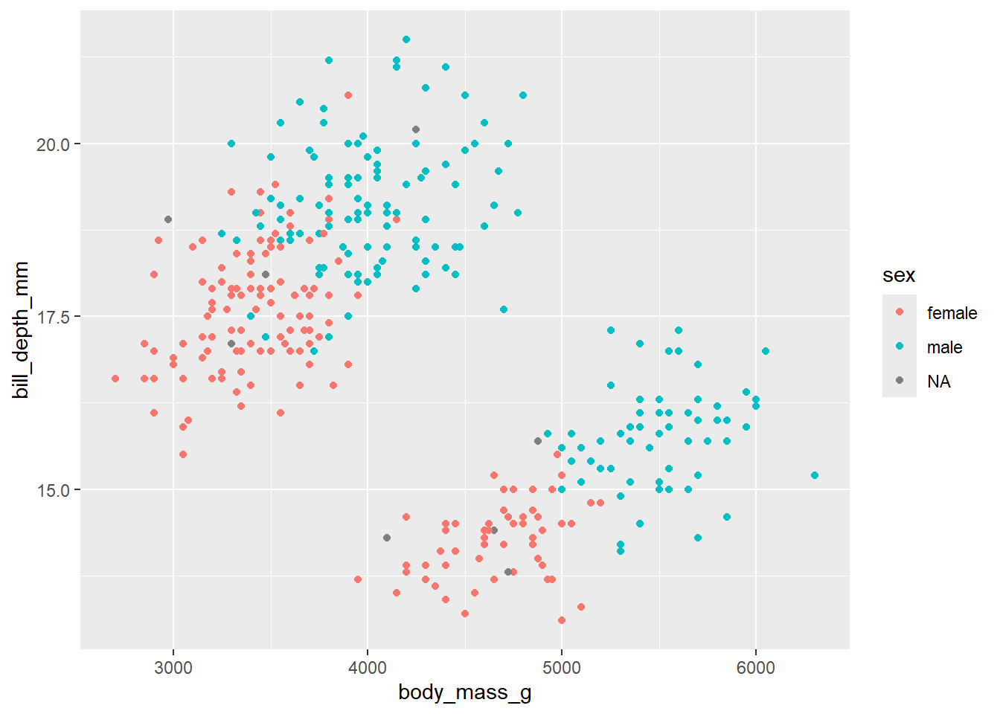
En el segundo ejemplo, el color se especifica fuera de aes(), por lo que todos los puntos tendrán el mismo color (azul oscuro), independientemente de los datos.
###Hay que tener mucho cuidado de dónde se insertan los diferentes argumentos
ggplot(data = penguins) +
geom_point(aes(x = body_mass_g, y = bill_depth_mm, shape = species), color = "darkblue")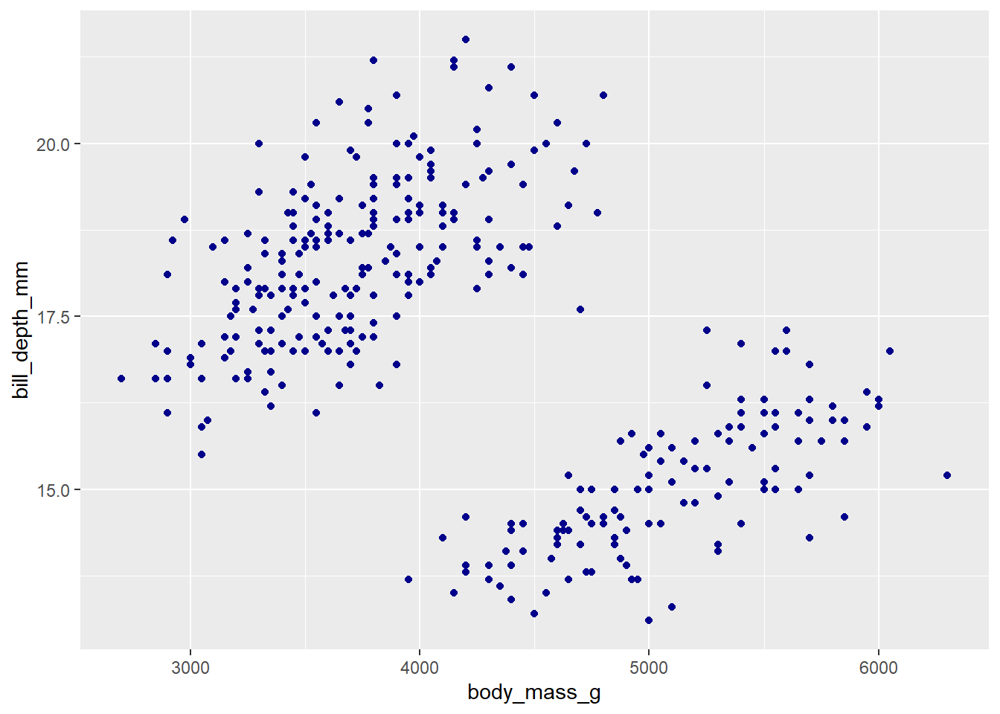
Esta distinción es fundamental: cuando queremos que un atributo visual (color, tamaño, forma) represente información de una variable, debe ir dentro de aes(). Cuando queremos que todos los elementos tengan el mismo valor para ese atributo, debe ir fuera.
En la ayuda de las funciones de ggplot2 aparece una lista de los aesthetics y los argumentos estéticos que acepta esa función. Se pueden incluir tantos aesthetics como se deseen.
🧩Ejercicio e):
Crea un gráfico de dispersión que muestre la relación entre: Masa corporal (body_mass_g) vs. Profundidad del pico (bill_depth_mm).
En un primer gráfico:
Colorea los puntos según la especie (
species).Fija el tamaño de los puntos a un valor constante.
En un segundo gráfico:
Usa un único color para todos los puntos.
Mapea el tamaño de los puntos a la masa corporal.
Observa ambos gráficos y responde:
¿En cuál aparece una leyenda?
¿Qué aesthetics dependen de los datos y cuáles no?
¿Qué gráfico comunica mejor la información?
¿Es buena idea mapear una variable al tamaño en este caso?
¿Qué ocurriría si ponemos color = “species” fuera de
aes()?
3.9 Tipos de gráfico (geom_)
La elección del tipo de gráfico apropiado depende fundamentalmente de:
El tipo de variables que estamos analizando (cualitativas, cuantitativas discretas, cuantitativas continuas)
El propósito de la visualización (explorar distribuciones, comparar grupos, mostrar relaciones, etc.)

💡Para elegir qué tipo de gráfico nos conviene según el propósito una herrramienta muy útil es chuleta sobre los principios de los gráficos.
3.9.1 Exploración de variables cualitativas (unidimensional)
Las variables cualitativas (también llamadas categóricas) representan atributos o categorías sin un orden numérico inherente. En el conjunto de datos penguins, ejemplos claros son:
- species (Adelie, Chinstrap, Gentoo)
- island (Biscoe, Dream, Torgersen)
- sex (female, male + NA)
Conteo por categoría
Cuando queremos saber cuántas observaciones hay en cada categoría. El conteo responde a preguntas como:
¿Cuántas observaciones hay en cada categoría?
El gráfico de barras geom_bar() es la opción más directa y efectiva..
ggplot(penguins, aes(x = species)) +
geom_bar() 
Interpretación: Este gráfico nos muestra claramente que la especie Adelie es la más numerosa en nuestro conjunto de datos, seguida por Gentoo y finalmente Chinstrap. Los conteos absolutos nos permiten entender la representatividad de cada categoría en nuestra muestra.
3.9.2 Proporciones dentro de categorías
Cuando queremos entender la composición interna de cada categoría (por ejemplo, “¿Cómo se distribuyen los sexos dentro de cada especie?”), usamos gráficos de barras con el argumento fill y diferentes posiciones.
Añadimos una segunda variable con fill y usamos position = “fill” para normalizar al 100%.
# Proporciones de sexo dentro de cada especie
ggplot(penguins, aes(x = species, fill = sex)) +
geom_bar(position = "fill")
#Para comparación directa entre subgrupos, usamos position = "dodge"3.9.3 Exploración de variables cuantitativas (numéricas)
Las variables cuantitativas describen medidas numéricas. Estas variables pueden ser continuas o discretas. En penguins, ejemplos incluyen:
body_mass_g (Peso corporal (gr))
flipper_length_mm (Longitud de la aleta (mm))
bill_length_mm (Longitud del pico (mm))
Variables cuantitativas continuas
Estas variables pueden tomar cualquier valor dentro de un rango continuo (incluyendo decimales). En penguins: body_mass_g (Peso corporal (gr)), flipper_length_mm (Longitud de la aleta (mm)), bill_length_mm (Longitud del pico (mm)).
Distribución de una variable continua
Para explorar cómo se distribuyen los valores de una variable continua, usamos principalmente dos tipos de gráficos:
Histograma (geom_histogram()) -> Divide el rango de valores en intervalos (bins) y muestra la frecuencia en cada intervalo:
# Histograma básico - muestra la distribución en intervalos
ggplot(penguins, aes(x = body_mass_g, fill = species)) +
geom_histogram(binwidth = 100) # binwidth controla el ancho de cada intervalo
Gráfico de densidad (geom_density()) -> Muestra una estimación suavizada de la distribución continua:
# Gráfico de densidad - curva suavizada
ggplot(penguins, aes(x = body_mass_g)) +
geom_density()
Comparación entre grupos: Cuando queremos comparar la distribución de una variable continua entre diferentes categorías podemos utilizar:
Diagrama de cajas (geom_boxplot()) -> Muestra estadísticos de resumen (mediana, cuartiles, valores atípicos):
# Boxplot comparando masa corporal entre especies
ggplot(penguins, aes(x = species, y = body_mass_g)) +
geom_boxplot()
Gráfico de violín (geom_violin()) -> Combina las ventajas del boxplot con la visualización de la densidad:
# Gráfico de violín mostrando la forma completa de la distribución
ggplot(penguins, aes(x = species, y = body_mass_g)) +
geom_violin()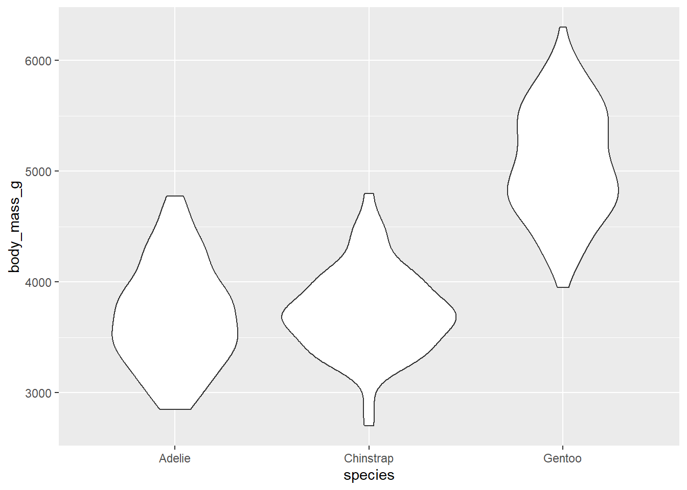
Variables cuantitativas discretas
Estas variables solo pueden tomar valores enteros o contables específicos (no hay valores intermedios entre ellos). Aunque en penguins no hay ejemplos claros de variables discretas, podemos crear uno para ilustrar el concepto.
Ejemplo con datos discretos: Supongamos que tenemos datos sobre el número de crías por nido (variable discreta):
# Creamos datos de ejemplo para variable discreta
datos_crias <- data.frame(
nido = 1:50,
crias = sample(1:5, 50, replace = TRUE, prob = c(0.1, 0.2, 0.4, 0.2, 0.1))
)Para variables discretas, podemos usar geom_bar() con stat = “count” o geom_histogram() con bins centrados en los valores enteros
# Opción 1: geom_bar() para conteos de valores discretos
ggplot(datos_crias, aes(x = crias)) +
geom_bar(stat = "count")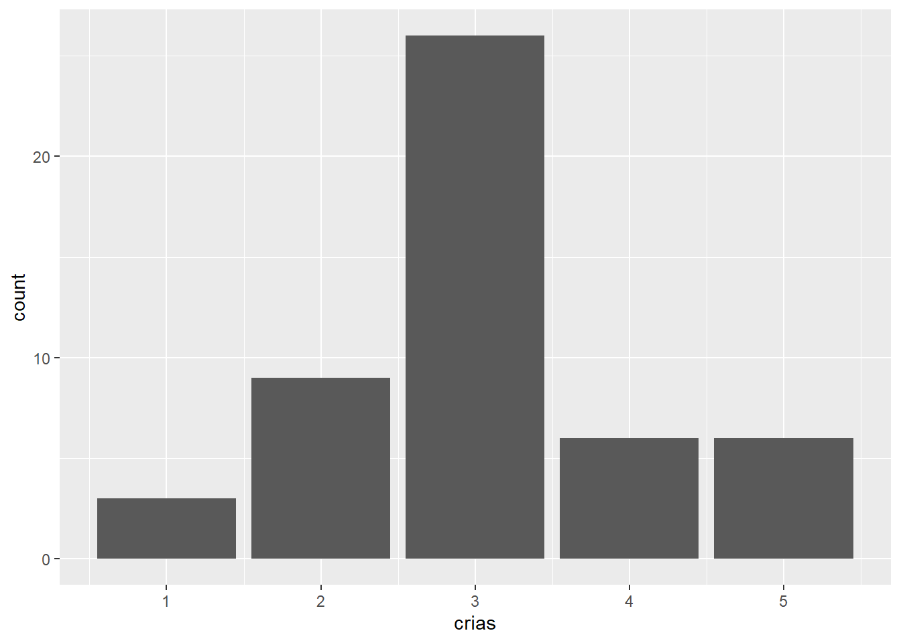
# Opción 2: geom_histogram() con binwidth = 1 y límites alineados
ggplot(datos_crias, aes(x = crias)) +
geom_histogram(binwidth = 1, center = 0.5, color = "white")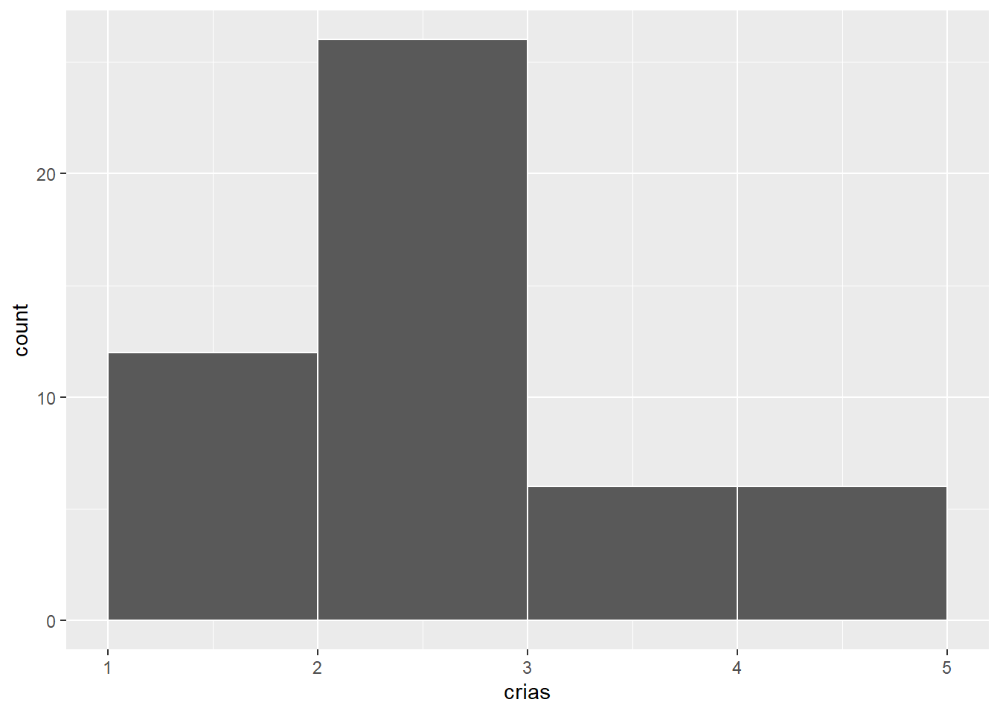
Diferencias clave en el tratamiento gráfico:
Característica Variables continuas Variables discretas
| Característica | Variables continuas | Variables discretas |
|---|---|---|
| Valores posibles | Cualquier valor en un rango (incluye decimales) | Solo valores específicos (generalmente enteros) |
| Geometría típica | geom_histogram(), geom_density() |
geom_bar(), geom_histogram() |
| Ajuste de bins | binwidth o bins para agrupar valores continuos | binwidth = 1 para separar cada valor entero |
| Posiciones en eje X | Escala continua con cualquier valor posible | Escala discreta con saltos entre valores |
Resumen práctico: ¿Cómo elegir?
Para variables continuas:
Histograma (geom_histogram): Cuando queremos ver la distribución en intervalos específicos
Densidad (geom_density): Cuando queremos una visión suavizada de la distribución
Boxplot (geom_boxplot): Para comparar estadísticos entre grupos
Violín (geom_violin): Para comparar distribuciones completas entre grupos
Para variables discretas:
Gráfico de barras (geom_bar): Cuando tenemos pocos valores posibles y queremos mostrar conteos
Histograma con binwidth = 1 (geom_histogram): Cuando queremos mantener la apariencia de histograma pero con valores discretos
🧩Ejercicio f):
Crea dos gráficos:
- Exploración de variables cualitativas
Tareas: a) Identifica qué variable(s) se pueden graficar con un geom_bar(). b) Crea un gráfico de barras para la variable más interesante y colorea las barras según sex. c) Ajusta la posición para mostrar proporciones y otra vez para mostrar conteos utilizando “position”.
¿Cuál es la especie/isla más frecuente?
¿Cómo cambia la interpretación al usar fill y dodge?
¿Se observa algún patrón interesante entre sexos y especies?
- Exploración de variables continuas y relación entre ellas
Variables: bill_length_mm, bill_depth_mm, body_mass_g
Tareas: a) Crea un scatterplot de bill_length_mm vs bill_depth_mm. b) Colorea los puntos según species y usa tamaño de punto según body_mass_g. c) Agrega transparencia para manejar solapamiento.
Preguntas:
¿Se forman grupos claros según especie?
¿Qué especie tiene picos más largos o profundos?
¿Cómo ayuda el tamaño y la transparencia a visualizar la relación entre variables?
5 ggplot2: Funciones avanzadas
5.1 Etiquetas (labs())
Las etiquetas son elementos fundamentales para mejorar la claridad y comprensión de los gráficos. La función labs() nos permite personalizar todos los textos descriptivos de un gráfico, haciéndolo autónomo y comprensible sin necesidad de referencias externas. Es crucial para crear visualizaciones profesionales que puedan ser interpretadas correctamente fuera de su contexto original, por ejemplo en una presentación de ppt.
Comenzamos creando un gráfico base de diagramas de caja que relaciona la especie de pingüinos con su masa corporal. Este gráfico servirá como punto de partida para demostrar cómo las etiquetas mejoran la comunicación de la información.
# Gráfico base
miplot1 <- ggplot(data = penguins) +
geom_boxplot(aes(x = species, y = body_mass_g))
miplot1
Ahora aplicamos la función labs() para añadir todos los elementos textuales necesarios: título principal, subtítulo contextual, etiquetas descriptivas para ambos ejes y un pie de figura que indica la fuente de los datos.
# Añadir etiquetas descriptivas
miplot1 +
labs(
title = "Masa corporal de los pingüinos por especie",
subtitle = "Datos de las tres islas",
x = "Especie",
y = "Masa corporal (g)",
caption = "Fuente: palmerpenguins"
)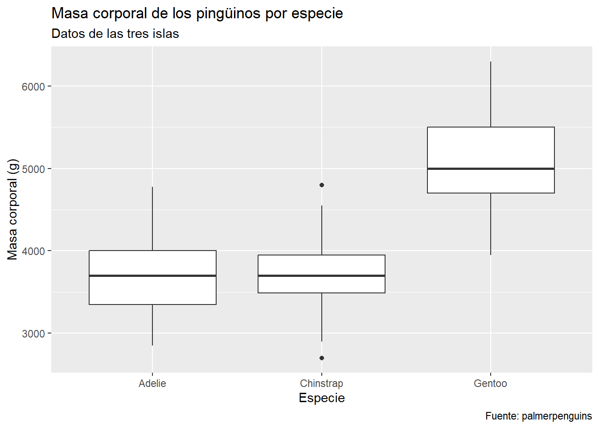
La función {labs()} permite personalizar los textos del gráfico. Es crucial para hacer los gráficos autónomos y comprensibles.
5.2 Sistema de coordenadas
Por defecto, ggplot2 usa coordenadas cartesianas, pero ofrece flexibilidad para ajustar la vista de los datos. Es importante distinguir entre hacer zoom (manteniendo todos los datos) y limitar el rango (eliminando datos fuera del rango).
La función coord_cartesian() permite enfocar en una región específica del gráfico sin descartar observaciones.
# Zoom en el eje Y
miplot1 +
coord_cartesian(ylim = c(2000, 4500))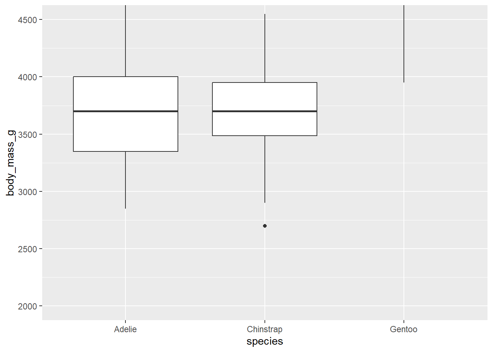
En contraste, cuando se usan límites directamente en la escala (scale_*_continuous() o xlim()/ylim()) se descartan los datos que quedan fuera del rango especificado:
# Límite en escala que SÍ descarta datos (observaciones fuera de 2000-6000 se eliminan)
miplot1 +
scale_y_continuous(limits = c(2000, 4500))
# Equivalente usando ylim() - también descarta datos
miplot1 +
ylim(2000, 4500)
⚠️ Advertencia: Cuando se usan límites en escalas, ggplot2 mostrará una advertencia indicando que se han eliminado observaciones.
Comparación práctica:
coord_cartesian(ylim = c(2000, 4500)): Mantiene todos los datos, solo ajusta la vista
scale_y_continuous(limits = c(2000, 4500)): Filtra y elimina datos fuera del rango
Esta diferencia es crucial cuando se usan estadísticos como regresiones o suavizados, ya que al descartar datos se afectan los cálculos de tendencias y modelos.
🧩Ejercicio g):
- Diagrama de cajas con etiquetas completas
- Crea un gráfico de boxplot de body_mass_g por species.
- Añade etiquetas usando labs() para:
Título principal: “Distribución de masa corporal por especie”
Subtítulo: “Datos del estudio Palmer Penguins”
Eje X: “Especie de pingüino”
Eje Y: “Masa corporal (g)”
Pie de figura: “Fuente: palmerpenguins”
Preguntas:
¿Por qué es importante incluir todas estas etiquetas en un gráfico que será mostrado fuera de contexto?
¿Qué aporta el subtítulo respecto al título?
- Ajuste de coordenadas / zoom
- Aplica coord_cartesian() para enfocar la vista entre 3000 y 5000 g en el eje Y.
- Crea otro gráfico usando ylim(3000, 5000) y observa la diferencia.
Preguntas:
¿Qué sucede con los puntos fuera del rango cuando usamos coord_cartesian() vs ylim()?
¿Por qué podría ser problemático usar ylim() si más adelante añadimos suavizados o regresiones?
- Bonus opcional – combinación de aesthetics
Agrega color a los boxplots según sex.
Mantén las etiquetas y el zoom aplicados.
Observa si el patrón de masas cambia entre sexos dentro de cada especie.
Pregunta:
¿Qué insights adicionales proporciona el color dentro de cada grupo?
5.3 Faceting
En el análisis de datos, a menudo no solo nos interesa estudiar la relación entre dos variables, sino también cómo cambia esa relación entre distintos grupos (por ejemplo, entre islas, sexos o especies). Representar todos los datos juntos puede ocultar patrones importantes.
El faceting es una técnica de ggplot2 que permite dividir un mismo gráfico en varios paneles, de modo que cada panel muestra un subconjunto de los datos, manteniendo una estructura visual común. Esto facilita la comparación directa entre grupos.
5.3.1 Gráfico base
Antes de aplicar faceting, es fundamental construir un gráfico base que represente correctamente la relación que queremos analizar. En este ejemplo, estudiaremos la relación entre la masa corporal y la longitud de la aleta de los pingüinos, diferenciando las especies mediante color.
miplot2 <- ggplot(
data = penguins,
aes(
x = body_mass_g,
y = flipper_length_mm,
color = species
)
) +
geom_point(na.rm = TRUE)
miplot2
Este gráfico muestra todos los individuos juntos. Permite observar la tendencia general, pero no facilita la comparación entre grupos específicos como islas o sexos.
5.3.2 Faceting por una variable categórica
Para analizar si la relación entre masa corporal y longitud de aleta varía según la isla, podemos dividir el gráfico en varios paneles, uno por cada isla. Esto se consigue con facet_wrap().
# Facet en filas
miplot2 +
facet_wrap(vars(island))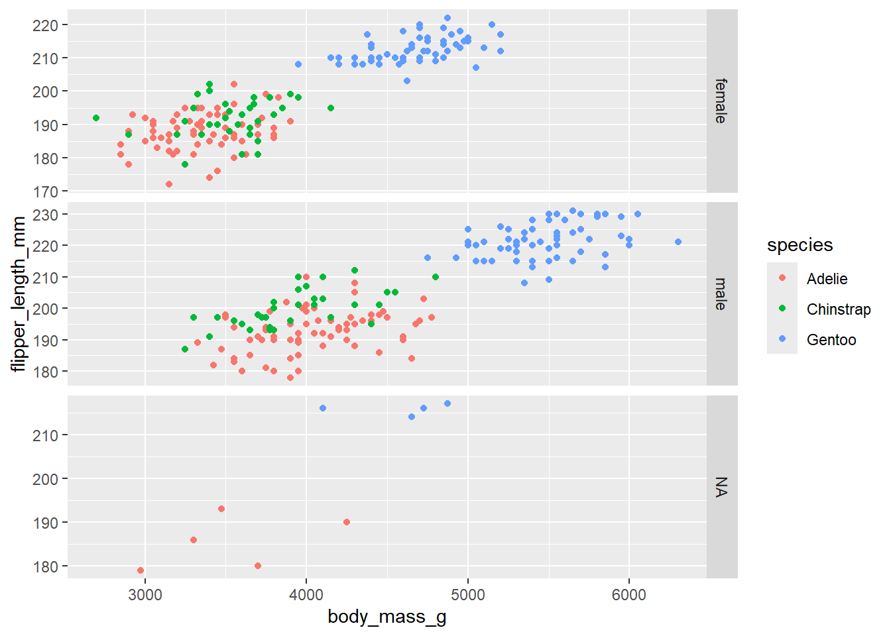
Cada panel contiene únicamente los datos correspondientes a una isla, pero todos comparten los mismos ejes. Esto permite comparar visualmente las distribuciones y relaciones entre islas de forma clara y directa.
Este tipo de faceting es especialmente útil cuando se quiere estudiar un único factor categórico.
5.3.3 Faceting estructurado: filas y columnas con facet_grid()
Cuando queremos estudiar simultáneamente dos variables categóricas, facet_grid() permite organizar los paneles en una rejilla definida por filas y columnas.
En el siguiente ejemplo, los datos se separan por sexo (filas) e isla (columnas):
miplot2 +
facet_grid(rows = vars(sex), cols = vars(island))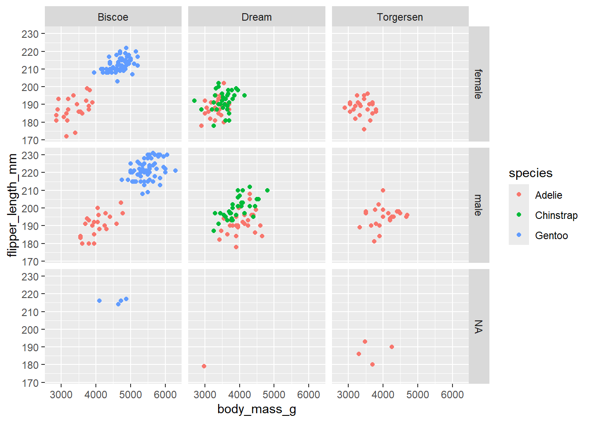
Cada panel representa una combinación concreta de sexo e isla. Este enfoque es muy potente para detectar interacciones entre factores, aunque puede generar un número elevado de paneles y resultar más complejo de interpretar para usuarios principiantes.
5.3.4 facet_wrap() frente a facet_grid()
Aunque ambas funciones crean múltiples paneles, tienen usos distintos:
facet_grid()se utiliza cuando queremos controlar explícitamente la disposición en filas y columnas.facet_wrap()es más flexible y se adapta mejor cuando una variable tiene muchos niveles.
Por ejemplo, una representación más compacta por isla sería:# Facet wrap (organiza en rejilla)
miplot2 +
facet_wrap(facets = vars(island), ncol = 3)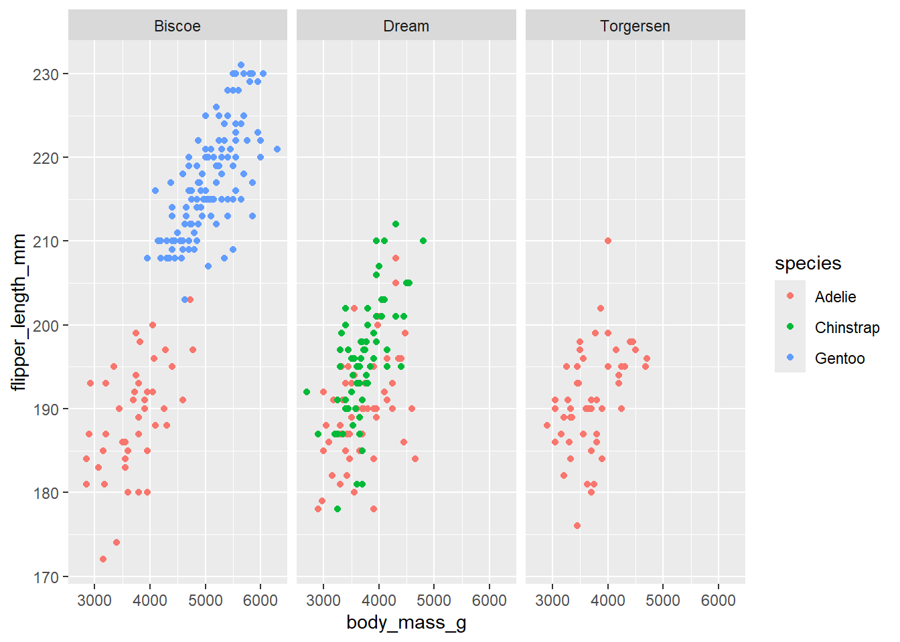
5.3.5 Comparación visual: sin faceting vs con faceting
Sin faceting, el gráfico muestra una visión global, pero dificulta responder preguntas como:
¿La relación entre masa corporal y longitud de aleta es igual en todas las islas?
¿Hay islas con mayor variabilidad?
El faceting no añade datos nuevos, pero organiza la información de forma que estas comparaciones sean evidentes.
5.3.6 Escalas fijas y escalas libres
Por defecto, todos los paneles utilizan la misma escala en los ejes, lo que facilita la comparación entre grupos.
miplot2 +
facet_wrap(vars(island))
Sin embargo, en algunos casos puede ser útil permitir que cada panel tenga su propia escala:
miplot2 +
facet_wrap(vars(island), scales = "free")
Escalas fijas: recomendadas cuando se quiere comparar valores entre grupos.
Escalas libres: útiles para explorar la variabilidad interna de cada grupo, aunque dificultan la comparación directa.
Idea clave
El faceting permite comparar grupos sin cambiar el diseño del gráfico.
No crea gráficos diferentes, sino distintas “ventanas” de la misma visualización.
🧩Ejercicio h)
h1) Visualizar la relación entre masa corporal (body_mass_g) y longitud de aleta (flipper_length_mm) diferenciando por sexo y especie.
- Crea un scatterplot de body_mass_g vs flipper_length_mm, coloreando los puntos por species.
Filas: sex
Columnas: species
Observa cómo se distribuyen los datos según estas dos variables categóricas.
Preguntas:
¿Qué patrones diferenciales se observan entre machos y hembras para cada especie?
¿Qué ventaja tiene facet_grid() para comparar categorías cruzadas en filas y columnas?
h2) Visualizar la relación entre longitud del pico (bill_length_mm) y profundidad del pico (bill_depth_mm) por isla.
- Crea un scatterplot de bill_length_mm vs bill_depth_mm, coloreando los puntos por species.
Aplica la faceta más adecuada para crear un panel por isla, con 2 columnas (ncol = 2).
- Analiza cómo varían las medidas del pico según la isla.
Preguntas:
¿Qué faceta es más adecuada cuando solo queremos facetear por una variable con varias categorías?
¿Qué información adicional se obtiene al comparar paneles lado a lado?
5.4 Posición
El parámetro position controla cómo se disponen elementos geométricos cuando hay superposiciones, especialmente en gráficos de barras con agrupaciones. Por defecto, ggplot2 usa posición “stack” (apilado), donde las barras se apilan unas sobre otras mostrando el total por categoría.
# Por defecto: apilado (stack)
ggplot(data = penguins) +
geom_bar(aes(x = species, fill = sex))
La posición “dodge” coloca las barras lado a lado, lo que facilita la comparación directa de los subgrupos dentro de cada categoría principal.
# Barras lado a lado (dodge)
ggplot(data = penguins) +
geom_bar(aes(x = species, fill = sex), position = "dodge")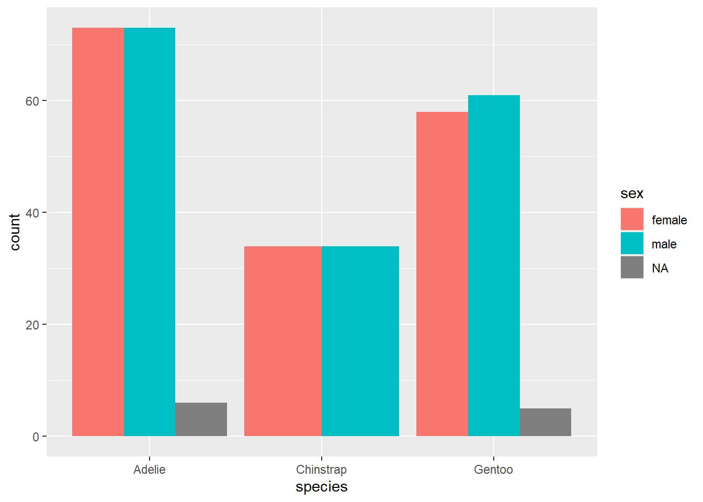
La posición “fill” también apila las barras, pero normaliza la altura al 100%, mostrando proporciones en lugar de conteos absolutos. Esto es útil para comparar la composición relativa de cada categoría.
# Proporciones (fill)
ggplot(data = penguins) +
geom_bar(aes(x = species, fill = sex), position = "fill") +
labs(y = "Proporción")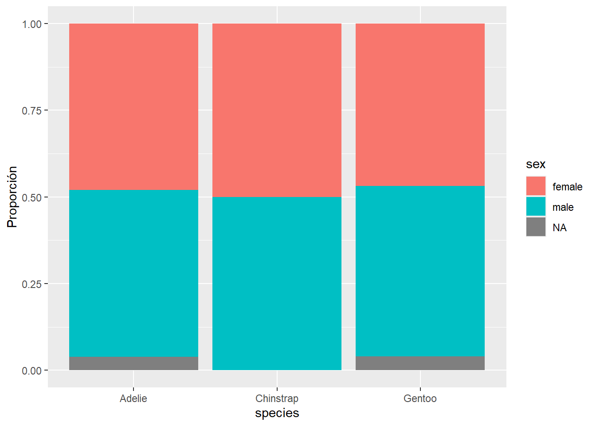
5.5 Escalas en ggplot2: cómo se traducen los datos en colores
En ggplot2, cuando usamos una variable dentro de aes(), estamos diciendo que los valores de esa variable se representen visualmente (por ejemplo, mediante color, tamaño o posición).
La función que decide cómo se hace esa traducción se llama escala.
Dicho de forma sencilla: Las escalas controlan cómo los datos se convierten en elementos visuales.
5.5.1 El papel de las escalas (idea básica)
Observa el siguiente gráfico:
miplot2 <- ggplot(penguins,
aes(x = body_mass_g,
y = flipper_length_mm,
color = species)) +
geom_point(na.rm = TRUE)Aquí ocurre lo siguiente:
specieses una variable categóricaggplot2asigna automáticamente un color distinto a cada especie
Ese comportamiento automático **ya es una escala**, aunque no la veamos explícitamente.5.5.2 ¿Qué son las funciones scale_*()?
Las funciones scale_*() nos permiten modificar ese comportamiento automático.
Su estructura general es:
scale_
aesthetic: qué propiedad visual estamos modificando
(color,fill,x,y, etc.)tipo: qué tipo de datos tiene la variable
(discrete,continuous,manual,gradient, etc.
Ejemplos:
scale_color_manual()→ colores definidos por el usuarioscale_color_gradient()→ gradiente para variables numéricasscale_y_continuous()→ control del eje Y
5.5.3 Escalas manuales para variables categóricas
Cuando la variable es categórica, suele ser buena idea elegir los colores manualmente, sobre todo en gráficos para informes o presentaciones.
miplot2 +
scale_color_manual(
values = c("darkorange", "purple", "cyan4"),
labels = c("Adelie", "Chinstrap", "Gentoo")
)
5.7 Temas
Los temas (theme_) en ggplot2 controlan los elementos no relacionados con los datos de un gráfico, es decir, los componentes estéticos que no dependen de la información que estamos visualizando. Esto incluye fuentes, colores de fondo, líneas de la cuadrícula, marcas de los ejes, leyendas y otros elementos decorativos. Los temas permiten dar un estilo coherente y profesional a nuestras visualizaciones, adaptándolas al contexto de presentación (informes académicos, presentaciones, publicaciones web, etc.).
5.7.1 Temas predefinidos
ggplot2 incluye varios temas predefinidos que podemos aplicar inmediatamente a cualquier gráfico. Cada uno tiene un propósito y estilo diferente.
Comenzamos creando un gráfico base que usaremos para demostrar los diferentes temas. Utilizaremos un gráfico de dispersión que relaciona la masa corporal con la longitud de la aleta, coloreado por especie.
# Gráfico base para demostrar temas
base_plot <- ggplot(penguins,
aes(x = body_mass_g, y = flipper_length_mm,
color = species)) +
geom_point(alpha = 0.7, na.rm = TRUE) +
labs(title = "Relación entre masa corporal y longitud de aleta",
subtitle = "Datos de pingüinos Palmer",
x = "Masa corporal (g)",
y = "Longitud de aleta (mm)",
color = "Especie")
base_plot
theme_gray() - Tema por defecto Este es el tema predeterminado de ggplot2. Tiene un fondo gris claro con líneas de cuadrícula blancas. Es un buen punto de partida, pero puede no ser ideal para publicaciones formales.
# Tema por defecto (se aplica automáticamente, pero lo mostramos explícitamente)
base_plot + theme_gray()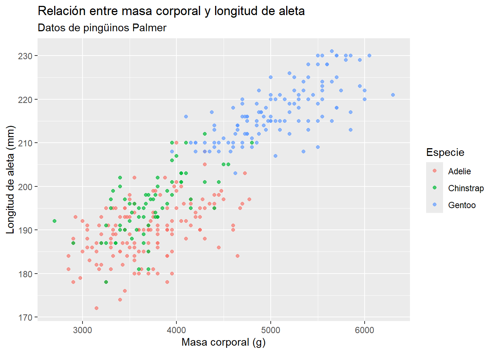
theme_bw() - Tema blanco y negro Un tema clásico con fondo blanco y líneas de cuadrícula grises. Es muy útil para publicaciones académicas donde se requiere alta legibilidad y compatibilidad con impresión en blanco y negro.
# Tema en blanco y negro, ideal para publicaciones
base_plot + theme_bw()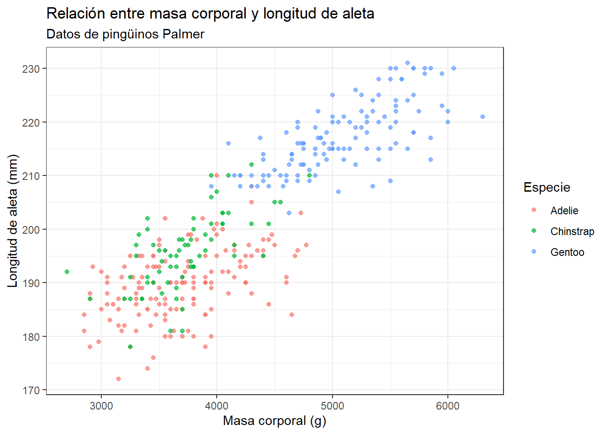
theme_minimal() - Tema minimalista Elimina muchos elementos decorativos, manteniendo solo lo esencial. No tiene líneas de cuadrícula ni marco alrededor del gráfico. Es moderno y se enfoca completamente en los datos.
# Tema minimalista, sin elementos superfluos
base_plot + theme_minimal()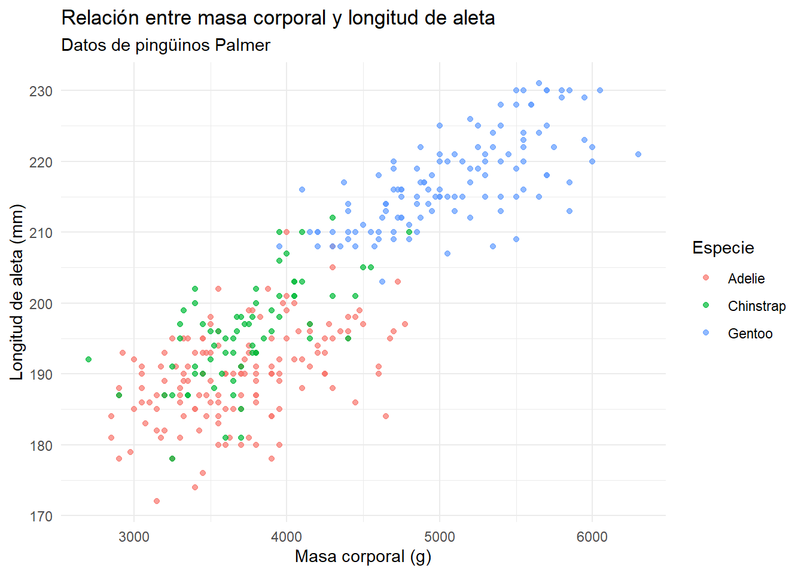
theme_classic() - Tema clásico Inspirado en gráficos tradicionales de estadística. Tiene ejes simples con líneas en los bordes, sin líneas de cuadrícula. Es limpio y apropiado para publicaciones científicas.
# Tema clásico, similar a gráficos de software estadístico tradicional
base_plot + theme_classic()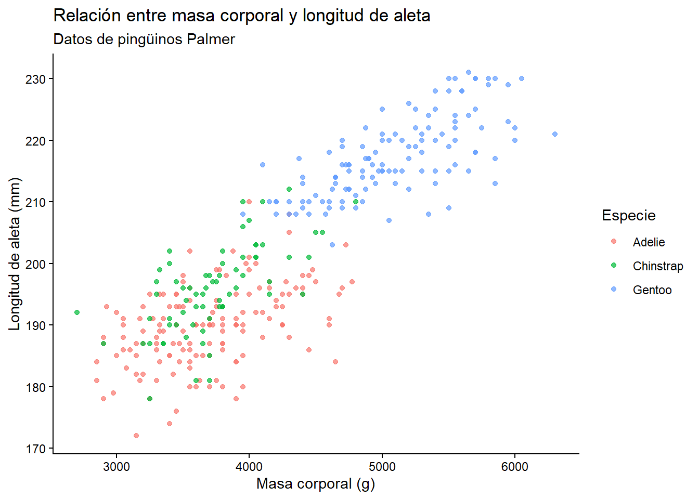
theme_void() - Tema vacío Elimina prácticamente todos los elementos excepto los datos. Es útil cuando queremos crear visualizaciones muy limpias o cuando vamos a añadir anotaciones personalizadas.
# Tema vacío, solo muestra los datos
base_plot + theme_void()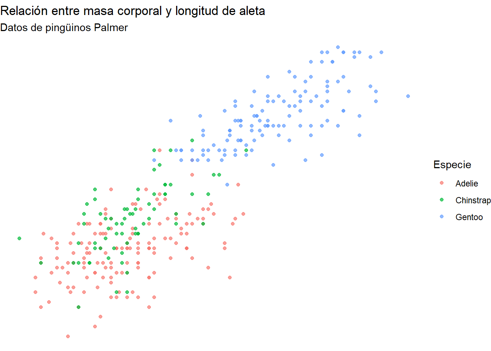
theme_dark() - Tema oscuro Similar al tema gris por defecto, pero con colores invertidos (fondo oscuro). Puede ser útil para presentaciones con fondos oscuros o para resaltar colores brillantes.
# Tema oscuro, útil para presentaciones con fondo negro
base_plot + theme_dark()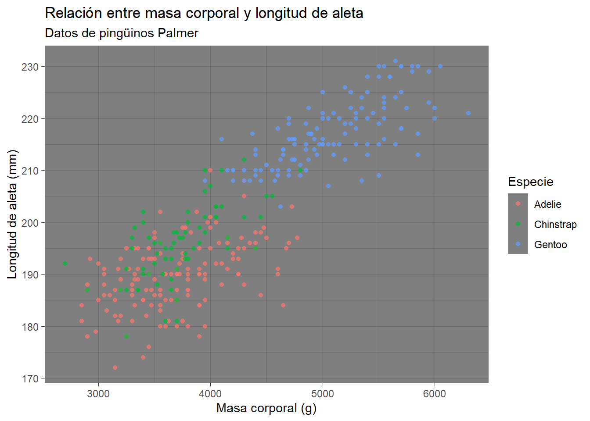
5.7.2 Temas de paquetes externos Existen paquetes adicionales que proporcionan temas especializados. Uno de los más populares es ggthemes, que incluye temas que imitan estilos de publicaciones como The Economist, Wall Street Journal, Excel, entre otros.
Primero, si no está instalado, debemos instalar el paquete ggthemes:
# Instalar ggthemes si no está disponible
# install.packages("ggthemes")
library(ggthemes)theme_economist() - Estilo The Economist Imita el estilo característico de las gráficas de la revista The Economist. Usa colores distintivos y tipografía específica.
# Tema estilo The Economist
base_plot + theme_economist() +
scale_color_economist()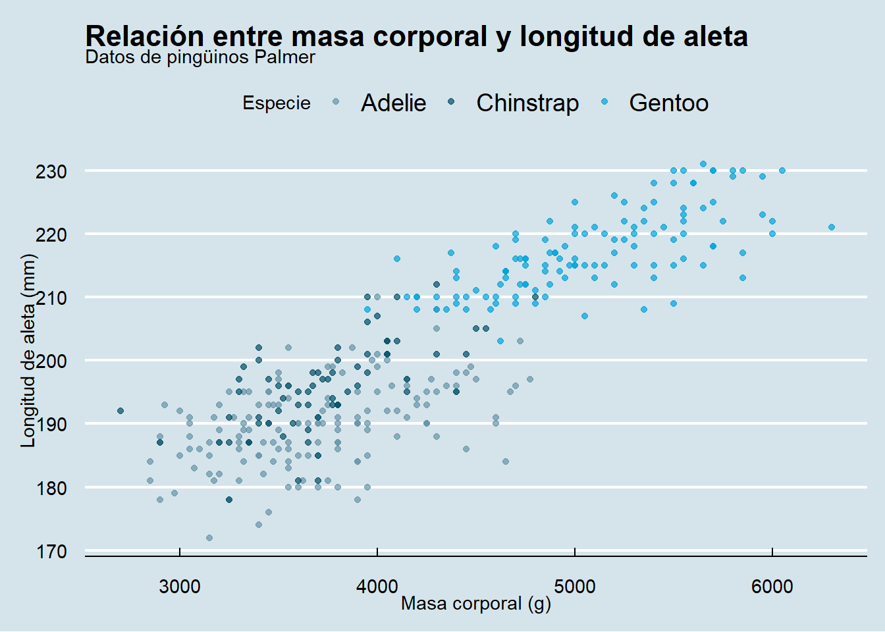
theme_wsj() - Estilo Wall Street Journal Basado en las gráficas del Wall Street Journal, con un estilo más periodístico y accesible.
# Tema estilo Wall Street Journal
base_plot + theme_wsj() +
scale_color_wsj("colors6")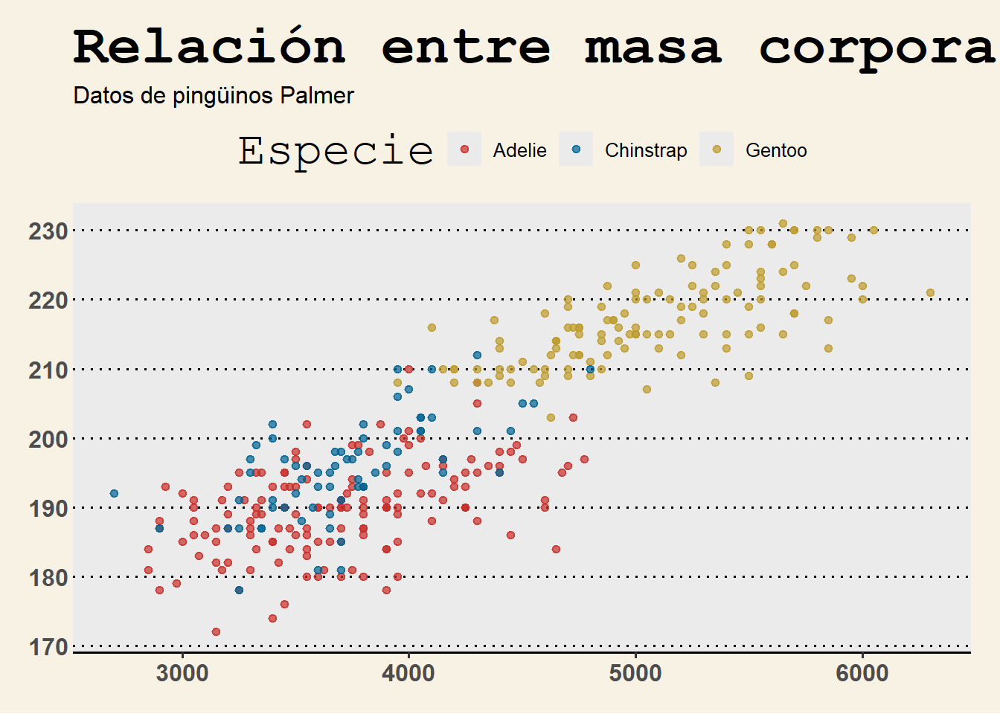
theme_excel() - Estilo Excel Recrea la estética por defecto de Microsoft Excel. Puede ser útil para transicionar usuarios de Excel a R, o para mantener consistencia con gráficos existentes.
# Tema estilo Excel (versión antigua)
base_plot + theme_excel() +
scale_color_excel()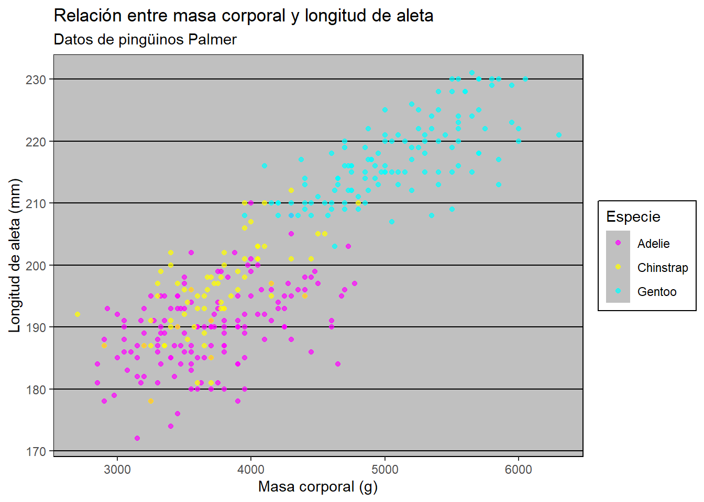
theme_fivethirtyeight() - Estilo FiveThirtyEight Inspirado en el sitio web de análisis estadístico FiveThirtyEight, conocido por sus visualizaciones atractivas y claras.
# Tema estilo FiveThirtyEight
base_plot + theme_fivethirtyeight() +
scale_color_fivethirtyeight()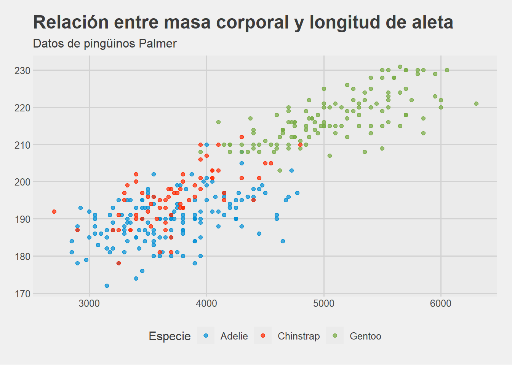
5.7.3 Personalización avanzada con theme() La función theme() permite ajustar individualmente casi cualquier aspecto del tema. Podemos modificar elementos específicos como textos, leyendas, ejes, fondos y márgenes.
Si accedéis a la ayuda para los temas (?theme), podréis modificar toooooodas estas opciones:
?themeModificar elementos de texto Podemos cambiar la fuente, tamaño, color y estilo de todos los textos del gráfico: título, subtítulo, etiquetas de ejes, texto de los ejes, leyenda, etc.
# Personalización completa de elementos de texto
base_plot +
theme_bw() +
theme(
# Título principal
plot.title = element_text(
family = "serif", # Fuente con serifas
size = 16, # Tamaño 16
face = "bold", # Negrita
hjust = 0.5, # Centrado horizontal
color = "darkblue" # Color azul oscuro
),
# Subtítulo
plot.subtitle = element_text(
family = "serif",
size = 12,
hjust = 0.5,
color = "gray40"
),
# Etiquetas de ejes
axis.title = element_text(
family = "sans", # Fuente sin serifas
size = 12,
face = "bold"
),
# Texto de los ejes (números)
axis.text = element_text(
family = "sans",
size = 10,
color = "black"
),
# Texto de la leyenda
legend.text = element_text(
family = "sans",
size = 10,
face = "italic" # Cursiva
),
# Título de la leyenda
legend.title = element_text(
family = "sans",
size = 11,
face = "bold"
)
)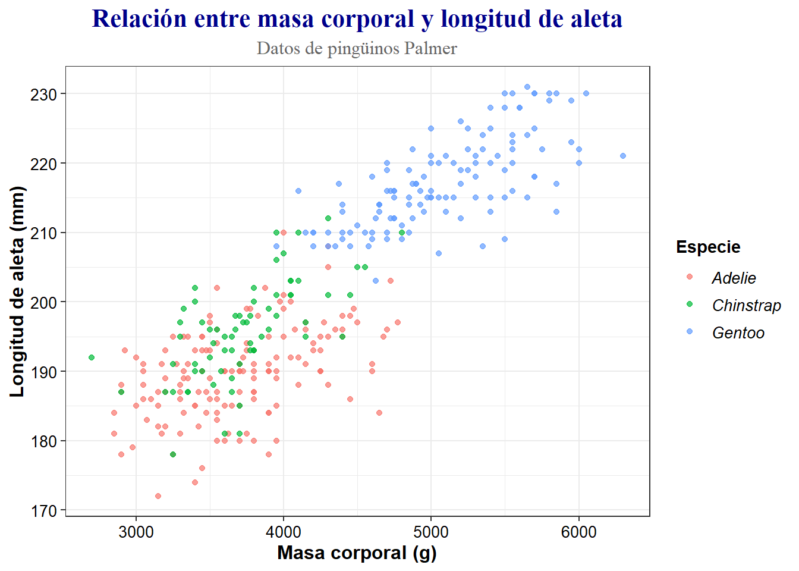
Modificar elementos de la leyenda La leyenda puede reposicionarse, ajustarse su fondo, borde, espaciado y más.
# Personalización de la leyenda
base_plot +
theme_bw() +
theme(
# Posición de la leyenda (opciones: "none", "left", "right", "bottom", "top")
legend.position = "bottom",
# Dirección de la leyenda ("horizontal" o "vertical")
legend.direction = "horizontal",
# Justificación de la leyenda dentro de su área
legend.justification = "center",
# Fondo de la leyenda
legend.background = element_rect(
fill = "gray95", # Color de fondo
color = "gray50", # Color del borde
linewidth = 0.5 # Grosor del borde
),
# Espaciado alrededor de la leyenda
legend.margin = margin(10, 10, 10, 10), # márgenes: arriba, derecha, abajo, izquierda
# Espaciado entre elementos de la leyenda
legend.spacing = unit(0.5, "cm"),
# Tamaño de los símbolos en la leyenda
legend.key.size = unit(1, "cm"),
# Fondo de los símbolos en la leyenda
legend.key = element_rect(fill = "white", color = "gray50")
) +
guides(color = guide_legend(
title.position = "top", # Posición del título
title.hjust = 0.5, # Centrado horizontal del título
nrow = 1 # Una sola fila para los elementos
))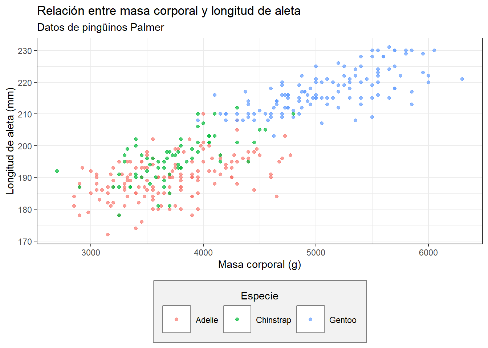
Modificar elementos de los ejes Podemos personalizar las líneas de los ejes, marcas de graduación (ticks) y líneas de cuadrícula.
# Personalización de ejes
base_plot +
theme_bw() +
theme(
# Líneas de los ejes
axis.line = element_line(
color = "darkred", # Color de las líneas de los ejes
linewidth = 1 # Grosor
),
# Marcas de graduación (ticks) en los ejes
axis.ticks = element_line(
color = "darkred", # Color
linewidth = 1 # Grosor
),
# Longitud de las marcas de graduación
axis.ticks.length = unit(0.2, "cm"),
# Líneas de cuadrícula mayores (grid.major)
panel.grid.major = element_line(
color = "gray90", # Color más claro
linewidth = 0.5, # Grosor
linetype = "dashed" # Línea discontinua
),
# Líneas de cuadrícula menores (grid.minor)
panel.grid.minor = element_line(
color = "gray95", # Color muy claro
linewidth = 0.25 # Muy fino
),
# Eliminar líneas de cuadrícula verticales
panel.grid.major.x = element_blank(),
panel.grid.minor.x = element_blank()
)
Modificar el fondo y márgenes El área del gráfico completa puede personalizarse, incluyendo fondos y márgenes.
# Personalización de fondos y márgenes
base_plot +
theme(
# Fondo del área del gráfico (donde están los datos)
panel.background = element_rect(
fill = "lightblue", # Color de fondo
color = "darkblue", # Color del borde
linewidth = 1.5 # Grosor del borde
),
# Fondo de toda la figura (incluye títulos, leyenda, etc.)
plot.background = element_rect(
fill = "gray98", # Color de fondo claro
color = "gray50", # Borde gris
linewidth = 1
),
# Márgenes del gráfico (arriba, derecha, abajo, izquierda)
plot.margin = margin(30, 30, 30, 30, unit = "pt"),
# Fondo de la leyenda
legend.background = element_rect(
fill = "white",
color = "gray50"
)
)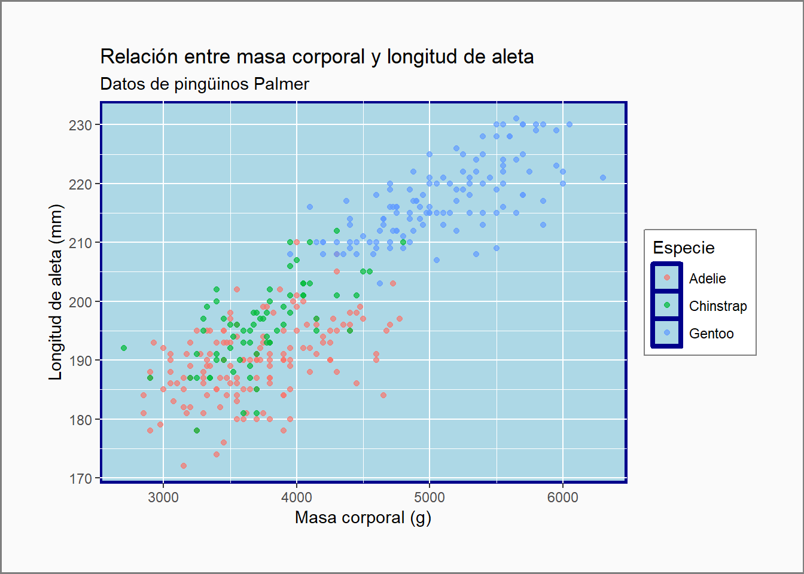
🧩Ejercicio aplicado):
Estudios previos en aves marinas indican que esta enfermedad se manifiesta principalmente en:
Reducción de la masa corporal
Desacople entre tamaño corporal y longitud de la aleta, es decir:
- Para una misma longitud de aleta, los individuos enfermos pesan menos.- Mayor impacto en los machos, debido a su mayor gasto energético durante el periodo reproductivo.
Además, los primeros informes sugieren que **algunas especies podrían ser más vulnerables que otras**, especialmente aquellas de menor masa corporal media.👉 Hipótesis científica de partida
Los pingüinos potencialmente más afectados serán:
Individuos de menor masa corporal
Con menor masa relativa respecto a la longitud de la aleta
Especialmente machos
Pertenecientes a determinadas especies e islas
Tu tarea es comprobar si los datos apoyan esta hipótesis mediante visualización. Las variables que se midieron en campo fueron:
species (Adelie, Chinstrap, Gentoo)
island (Biscoe, Dream, Torgersen)
sex (female, male)
body_mass_g (masa corporal en gramos)
flipper_length_mm (longitud de la aleta)
bill_length_mm y bill_depth_mm (medidas del pico)
year (año de observación)
El equipo de investigación quiere explorar cómo las características físicas se relacionan entre sí y con la isla y el sexo de los pingüinos, para identificar posibles grupos más vulnerables. Tu misión es crear una visualización completa que permita analizar la situación y comunicarla profesionalmente.
Tareas del reto:
Gráfico base y aesthetics
Comparación entre
body_mass_gvsflipper_length_mm.Mapea
speciesa color,sexa forma ybill_length_mmal tamaño de los puntos.Ajusta la transparencia .
Faceting avanzado
Usa las facetas para crear paneles por sexo (filas) e isla (columnas).
Observa si la relación masa-longitud de aleta difiere entre islas o sexos.
Compara con facetas (
facet_grid()vsfacet_wrap()): ¿Qué ventajas y limitaciones tiene cada enfoque?
Zoom y filtrado visual
Aplica
coord_cartesian()para centrarte en masa corporal entre 2500 y 5000 g, sin eliminar datos.Experimenta con
ylim()y observa qué pasa con los datos fuera del rango.
Etiquetas y tema profesional
Añade título, subtítulo, ejes y pie de figura.
Aplica un tema (theme) adecuado.
Ajusta posición, tamaño y disposición de la leyenda usando theme().
Análisis e interpretación
Según tu gráfico, ¿qué especie parece más afectada por la enfermedad (ej.: menor masa corporal promedio)?
¿Algún sexo o isla muestra mayor vulnerabilidad?
¿La longitud de aleta y la masa corporal se comportan de manera consistente entre islas?
¿Hay subgrupos que podrían requerir vigilancia especial?
7. Mapas con ggplot2: Introducción a la visualización de datos espaciales.
La representación de mapas es una parte fundamental de muchas disciplinas científicas, desde la ecología y geografía hasta la salud pública y la sociología. En R, podemos crear mapas de alta calidad utilizando ggplot2, siempre que transformemos los datos espaciales en un formato estructurado que ggplot pueda entender.
Existen dos tipos principales de datos espaciales: raster y vectorial. Los datos raster están compuestos por una matriz de píxeles (cada uno con un valor), mientras que los datos vectoriales están compuestos por puntos, líneas y polígonos.
7.1 Mapas ráster
Los mapas ráster son útiles para representar datos continuos sobre una superficie, como temperatura, elevación, o densidad de población. Cada celda en el raster tiene un valor numérico que representa la variable de interés.
Preparación del entorno: Cargar y visualizar datos raster básicos.
Vamos a utilizar paquetes que son estándar y ampliamente disponibles. Si no los tienes instalados, puedes instalarlos con install.packages().
# Cargar las librerías necesarias
library(terra) # Para datos raster
library(viridis) # Para paletas de coloresComenzaremos con un ejemplo simple usando datos de elevación incluidos en el paquete terra. Estos datos representan la topografía de una región específica.
# Cargar datos de ejemplo de elevación
# system.file() busca el archivo dentro del paquete instalado
r <- rast(system.file("ex/elev.tif", package = "terra"))
# Examinar la estructura del objeto raster
print(r)class : SpatRaster
dimensions : 90, 95, 1 (nrow, ncol, nlyr)
resolution : 0.008333333, 0.008333333 (x, y)
extent : 5.741667, 6.533333, 49.44167, 50.19167 (xmin, xmax, ymin, ymax)
coord. ref. : lon/lat WGS 84 (EPSG:4326)
source : elev.tif
name : elevation
min value : 141
max value : 547 # Información básica sobre el raster
cat("Resolución (tamaño de celda):", res(r), "\n")Resolución (tamaño de celda): 0.008333333 0.008333333 cat("Extensión (límites):\n")Extensión (límites):print(ext(r))SpatExtent : 5.74166666666667, 6.53333333333333, 49.4416666666667, 50.1916666666667 (xmin, xmax, ymin, ymax)##Transformar datos raster para ggplot2 Para usar datos raster en ggplot2, necesitamos convertirlos a un formato tabular (data.frame) que contenga las coordenadas (x, y) y los valores de cada celda.
# Convertir raster a data.frame para ggplot
# xy = TRUE incluye las coordenadas, na.rm = TRUE elimina celdas sin valor
r_df <- as.data.frame(r, xy = TRUE, na.rm = TRUE)# Examinar la estructura de los datos transformados
head(r_df) x y elevation
127 6.004167 50.17917 529
128 6.012500 50.17917 542
129 6.020833 50.17917 547
130 6.029167 50.17917 535
218 5.970833 50.17083 485
219 5.979167 50.17083 497str(r_df)'data.frame': 4608 obs. of 3 variables:
$ x : num 6 6.01 6.02 6.03 5.97 ...
$ y : num 50.2 50.2 50.2 50.2 50.2 ...
$ elevation: int 529 542 547 535 485 497 515 515 515 518 ...# Cambiar el nombre de la columna para mayor claridad
names(r_df)[3] <- "elevacion"
head(r_df) x y elevacion
127 6.004167 50.17917 529
128 6.012500 50.17917 542
129 6.020833 50.17917 547
130 6.029167 50.17917 535
218 5.970833 50.17083 485
219 5.979167 50.17083 497##Crear un mapa raster con ggplot2 Ahora que tenemos los datos en formato tabular, podemos crear un mapa usando geom_raster().
# Mapa básico con ggplot
ggplot() +
geom_raster(data = r_df, aes(x = x, y = y, fill = elevacion)) +
labs(title = "Mapa de elevación usando ggplot2",
x = "Longitud",
y = "Latitud",
fill = "Elevación (m)") +
theme_minimal()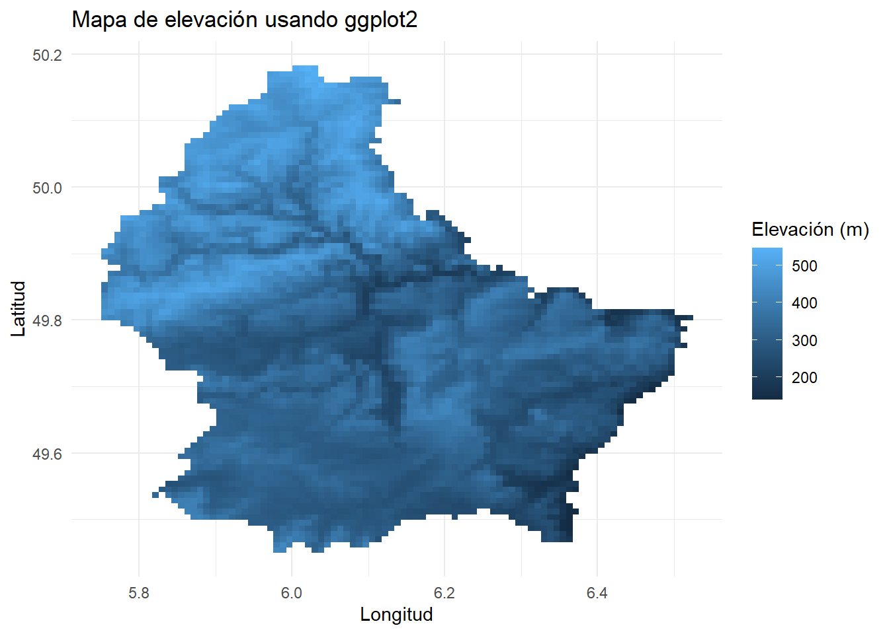
Mejorar la visualización del mapa raster
Podemos mejorar nuestro mapa ajustando la paleta de colores, añadiendo contornos y mejorando la leyenda.
# Mapa mejorado con paleta de colores secuencial
ggplot() +
geom_raster(data = r_df, aes(x = x, y = y, fill = elevacion)) +
# Añadir curvas de nivel para mejorar la lectura
geom_contour(data = r_df, aes(x = x, y = y, z = elevacion),
color = "gray30", alpha = 0.5, linewidth = 0.3) +
# Usar una paleta de colores secuencial (viridis)
scale_fill_viridis_c(option = "plasma", direction = -1) +
# Ajustar coordenadas para mantener proporciones
coord_equal() +
labs(title = "Mapa topográfico mejorado",
subtitle = "Datos de elevación con curvas de nivel",
x = "Longitud",
y = "Latitud",
fill = "Altitud (m)") +
theme_minimal() +
theme(
plot.title = element_text(hjust = 0.5, face = "bold"),
legend.position = "right",
legend.key.height = unit(2, "cm")
)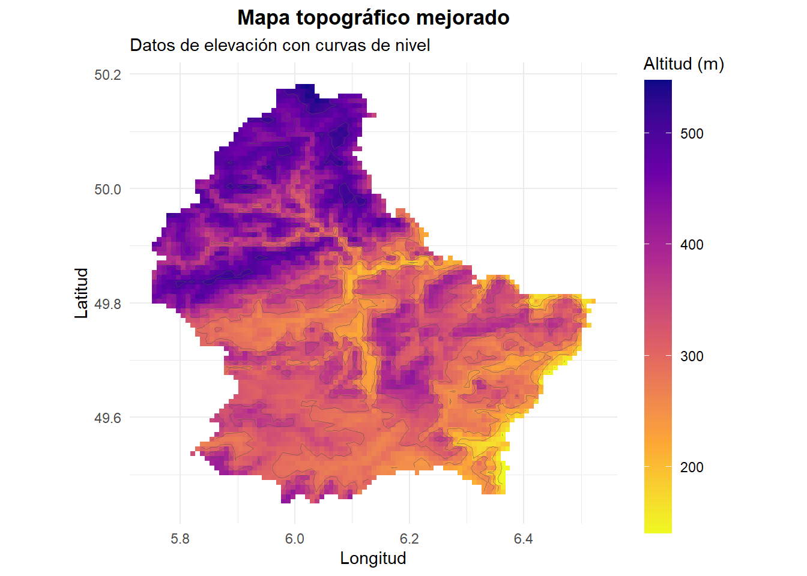
7.2 Mapas vectoriales
Los mapas vectoriales son ideales para representar límites administrativos, ríos, carreteras y otros elementos lineales o poligonales. En ggplot2, la función principal para trabajar con datos vectoriales es geom_sf().
Trabajar con datos vectoriales simples
Comenzaremos con datos vectoriales básicos usando el paquete terra, que incluye conjuntos de datos espaciales de ejemplo.
Cargar datos vectoriales de ejemplo
Vamos a cargar datos de límites administrativos de un país de ejemplo que viene incluido con el paquete terra.
# Cargar librería para datos vectoriales
# sf es el estándar para datos vectoriales en R
library(sf)# Cargar datos vectoriales de ejemplo (Luxemburgo)
# system.file() busca el archivo shapefile dentro del paquete
lux_vector <- vect(system.file("ex/lux.shp", package = "terra"))# Convertir a formato sf (simple features) para usar con ggplot2
lux_sf <- st_as_sf(lux_vector)# Examinar la estructura de los datos
print(lux_sf)Simple feature collection with 12 features and 6 fields
Geometry type: POLYGON
Dimension: XY
Bounding box: xmin: 5.74414 ymin: 49.44781 xmax: 6.528252 ymax: 50.18162
Geodetic CRS: WGS 84
First 10 features:
ID_1 NAME_1 ID_2 NAME_2 AREA POP
1 1 Diekirch 1 Clervaux 312 18081
2 1 Diekirch 2 Diekirch 218 32543
3 1 Diekirch 3 Redange 259 18664
4 1 Diekirch 4 Vianden 76 5163
5 1 Diekirch 5 Wiltz 263 16735
6 2 Grevenmacher 6 Echternach 188 18899
7 2 Grevenmacher 7 Remich 129 22366
8 2 Grevenmacher 12 Grevenmacher 210 29828
9 3 Luxembourg 8 Capellen 185 48187
10 3 Luxembourg 9 Esch-sur-Alzette 251 176820
geometry
1 POLYGON ((6.026519 50.17767...
2 POLYGON ((6.178368 49.87682...
3 POLYGON ((5.881378 49.87015...
4 POLYGON ((6.131309 49.97256...
5 POLYGON ((5.977929 50.02602...
6 POLYGON ((6.385532 49.83703...
7 POLYGON ((6.316665 49.62337...
8 POLYGON ((6.425158 49.73164...
9 POLYGON ((5.998312 49.69992...
10 POLYGON ((6.039474 49.44826...head(lux_sf)Simple feature collection with 6 features and 6 fields
Geometry type: POLYGON
Dimension: XY
Bounding box: xmin: 5.74414 ymin: 49.69933 xmax: 6.528252 ymax: 50.18162
Geodetic CRS: WGS 84
ID_1 NAME_1 ID_2 NAME_2 AREA POP geometry
1 1 Diekirch 1 Clervaux 312 18081 POLYGON ((6.026519 50.17767...
2 1 Diekirch 2 Diekirch 218 32543 POLYGON ((6.178368 49.87682...
3 1 Diekirch 3 Redange 259 18664 POLYGON ((5.881378 49.87015...
4 1 Diekirch 4 Vianden 76 5163 POLYGON ((6.131309 49.97256...
5 1 Diekirch 5 Wiltz 263 16735 POLYGON ((5.977929 50.02602...
6 2 Grevenmacher 6 Echternach 188 18899 POLYGON ((6.385532 49.83703...# Información sobre las columnas disponibles
cat("Columnas disponibles:\n")Columnas disponibles:print(names(lux_sf))[1] "ID_1" "NAME_1" "ID_2" "NAME_2" "AREA" "POP" "geometry"Crear un mapa vectorial con geom_sf()
La función geom_sf() simplifica enormemente la creación de mapas vectoriales, ya que automáticamente maneja la geometría y el sistema de coordenadas.
# Mapa básico de Luxemburgo
ggplot(data = lux_sf) +
geom_sf() +
labs(title = "Mapa básico de Luxemburgo",
subtitle = "Distritos administrativos") +
theme_minimal()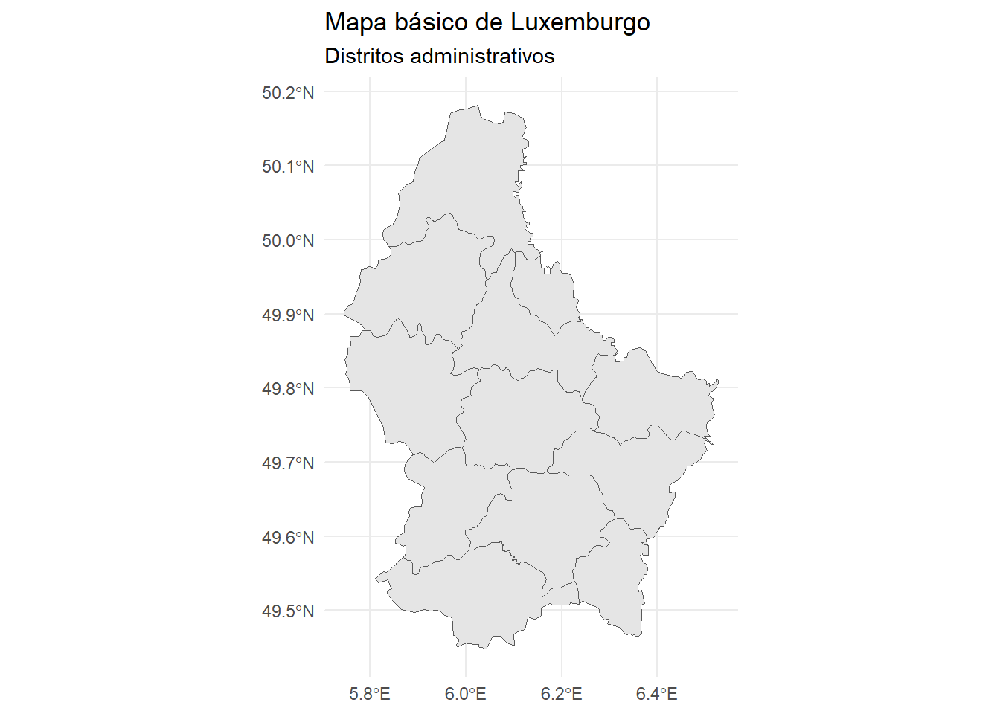
##Añadir información temática al mapa Podemos usar variables de los datos para colorear los polígonos y crear mapas temáticos.
# Mapa temático: Área de cada distrito
ggplot(data = lux_sf) +
geom_sf(aes(fill = AREA)) +
# Usar una paleta de colores secuencial
scale_fill_viridis_c(
option = "viridis",
na.value = "gray90",
name = "Área (km²)"
) +
labs(title = "Área de los distritos de Luxemburgo",
subtitle = "Mapa temático por tamaño geográfico",
caption = "Fuente: Datos de ejemplo de terra") +
theme_minimal() +
theme(
plot.title = element_text(hjust = 0.5, face = "bold"),
legend.position = "right"
)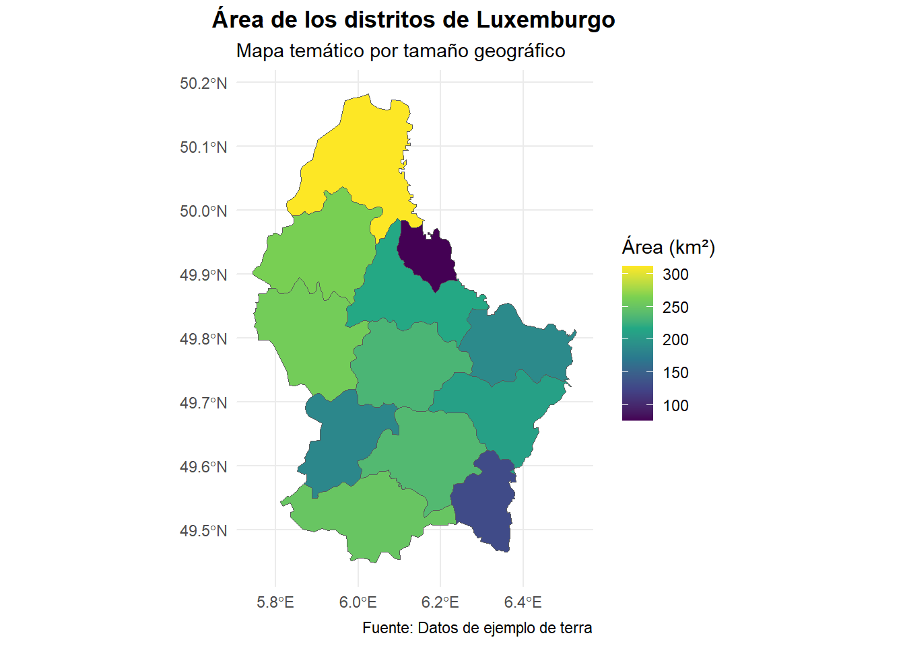
Personalizar colores para variables categóricas
Cuando trabajamos con variables categóricas (como nombres de regiones), podemos usar paletas de colores cualitativas.
# Mapa con colores por nombre de distrito (variable categórica)
ggplot(data = lux_sf) +
geom_sf(aes(fill = NAME_2), color = "white", linewidth = 0.3) +
# Usar una paleta de colores cualitativa
scale_fill_brewer(palette = "Set3", name = "Distrito") +
labs(title = "Distritos de Luxemburgo",
subtitle = "Coloreados por nombre de distrito",
x = "Longitud",
y = "Latitud") +
theme_minimal() +
theme(
plot.title = element_text(hjust = 0.5, face = "bold"),
legend.position = "right"
)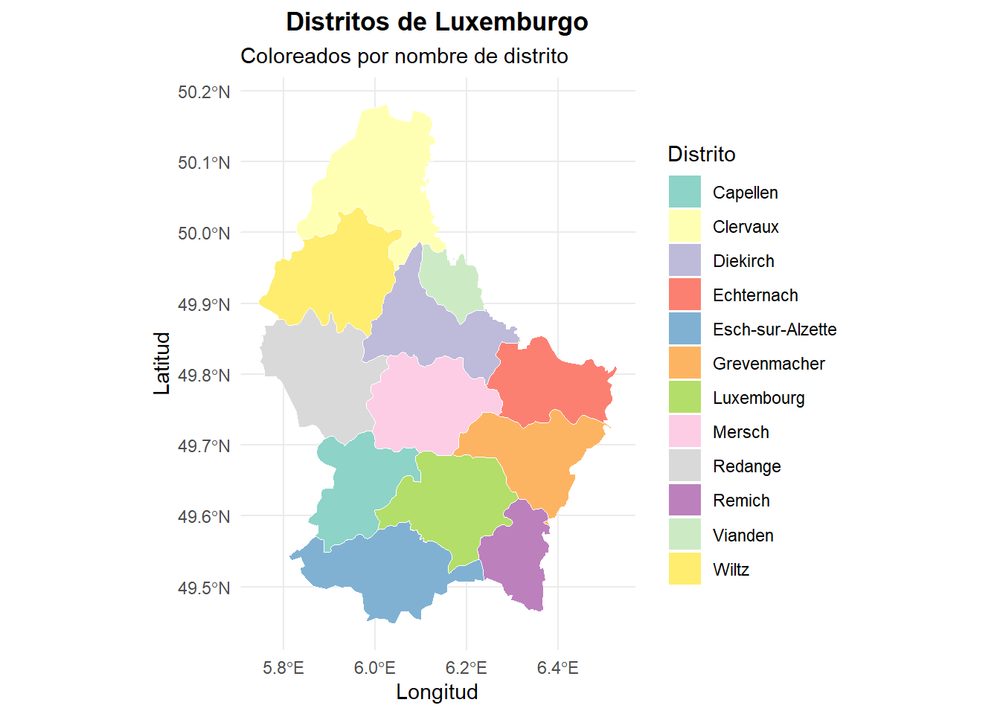
7.3 Combinar datos raster y vectoriales
Una de las ventajas de ggplot2 es la capacidad de combinar múltiples capas de datos. Podemos superponer datos vectoriales sobre un mapa raster.
Para este ejemplo, vamos a crear un raster simple y superponer los datos vectoriales
Primero, crear un raster de ejemplo con la misma extensión que Luxemburgo
# Obtener la extensión de Luxemburgo
lux_bbox <- st_bbox(lux_sf)# Crear un raster simple con valores aleatorios para la región
raster_lux <- rast(
extent = c(lux_bbox["xmin"], lux_bbox["xmax"],
lux_bbox["ymin"], lux_bbox["ymax"]),
resolution = 0.01, # Resolución de 0.01 grados
vals = runif(100 * 100) # 100x100 celdas con valores aleatorios
)# Convertir a data.frame para ggplot
raster_lux_df <- as.data.frame(raster_lux, xy = TRUE, na.rm = TRUE)
names(raster_lux_df)[3] <- "valor"# Crear mapa combinado
ggplot() +
# Capa base: raster
geom_raster(data = raster_lux_df, aes(x = x, y = y, fill = valor), alpha = 0.2) +
scale_fill_viridis_c(option = "magma", name = "Valor raster") +
# Capa superior: límites vectoriales
geom_sf(data = lux_sf, fill = NA, color = "darkred", linewidth = 0.8) +
# Añadir etiquetas de distritos
geom_sf_text(data = lux_sf, aes(label = NAME_2), size = 3, color = "darkblue") +
labs(title = "Mapa combinado raster-vectorial",
subtitle = "Raster aleatorio con límites administrativos de Luxemburgo",
x = "Longitud",
y = "Latitud") +
theme_minimal() +
theme(
plot.title = element_text(hjust = 0.5, face = "bold"),
legend.position = "right"
)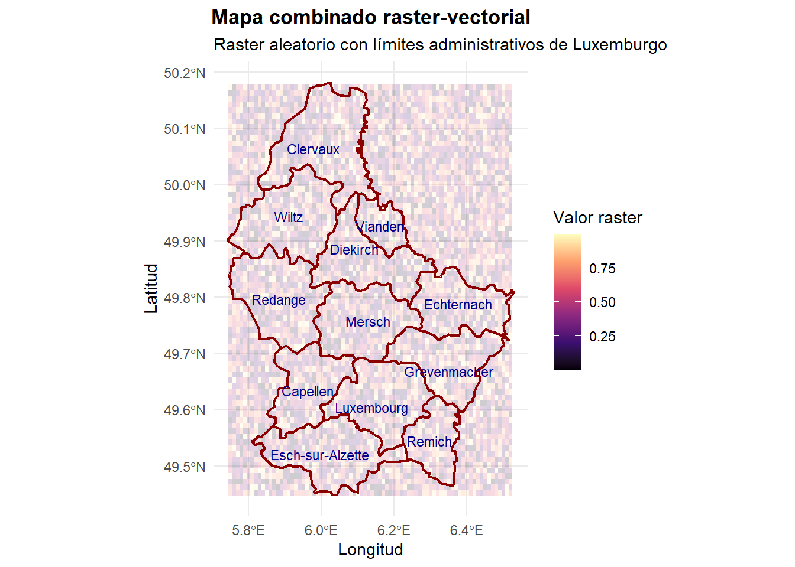
7.4 Proyecciones y sistemas de coordenadas
Los mapas utilizan diferentes proyecciones para representar la superficie curva de la Tierra en un plano. Es importante entender y especificar la proyección correcta para cada mapa.
Trabajar con diferentes proyecciones
# Mapa de Luxemburgo con diferentes proyecciones
# 1. Proyección original (WGS84 - coordenadas geográficas)
p1 <- ggplot(data = lux_sf) + #Por defecto tendremos el crs = WGS84
geom_sf() +
coord_sf(crs = 4326) + # WGS84 (código EPSG)
labs(title = "WGS84 (coordenadas geográficas)") +
theme_minimal()
p1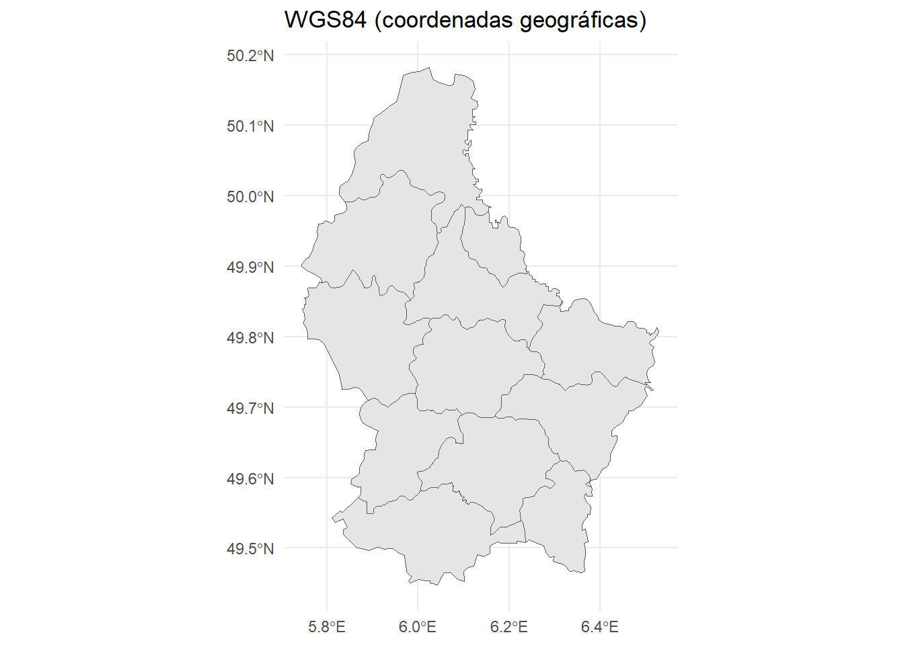
# 2. Proyección UTM para la zona de Luxemburgo
lux_utm <- st_transform(lux_sf, crs = 32631)
p2 <- ggplot(data = lux_utm) +
geom_sf() +
coord_sf(datum = NA) +
labs(title = "UTM Zona 31N",
subtitle = "Unidades: metros\nEje X: Este (Easting), Eje Y: Norte (Northing)") +
theme_minimal() +
theme(plot.title = element_text(hjust = 0.5, face = "bold"))
p2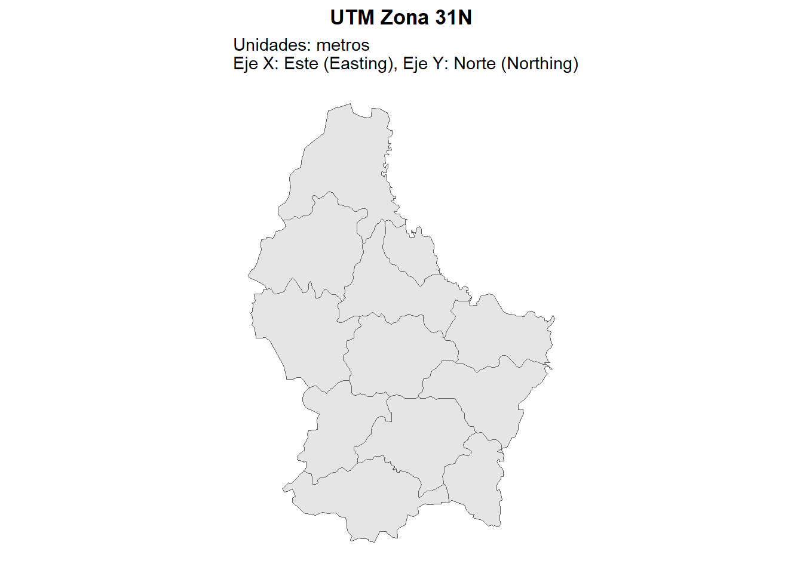
# Mostrar las dos proyecciones
library(patchwork)
p1 + p2 + plot_layout(ncol = 2) +
plot_annotation(
title = "Comparación de proyecciones cartográficas",
subtitle = "La misma región con diferentes sistemas de coordenadas",
caption = "La proyección UTM minimiza la distorsión para esta zona"
)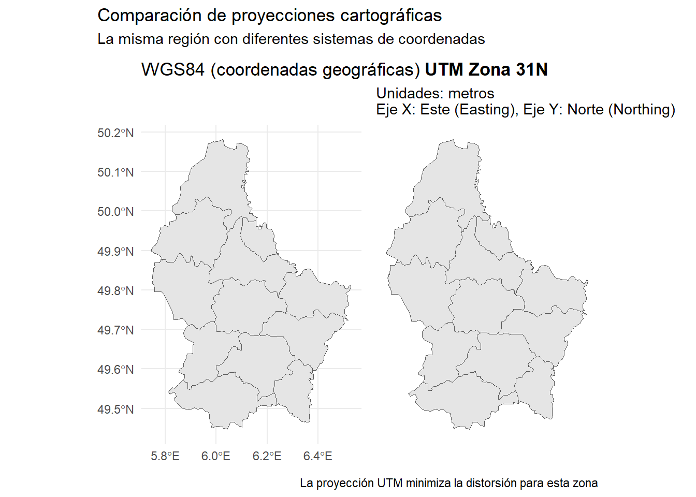
7.5 Ejercicios prácticos
Ejercicio 1: Mapa temático de población
Utilizando los datos de Luxemburgo (lux_sf), crea un mapa que muestre la población (POP) de cada distrito. Personaliza los colores, añade una leyenda clara y etiquetas con los nombres de los distritos.
# Tu código aquí para el ejercicio 1:
# 1. Crea un mapa con geom_sf() usando fill = POP
# 2. Personaliza la paleta de colores con scale_fill_viridis_c()
# 3. Añade etiquetas con geom_sf_text() o geom_sf_label()
# 4. Ajusta el tema y los títulos# Solución del ejercicio 1:
ggplot(data = lux_sf) +
geom_sf(aes(fill = POP), color = "white", linewidth = 0.5) +
geom_sf_text(aes(label = NAME_2), size = 3, color = "black") +
scale_fill_viridis_c(
option = "inferno",
name = "Población",
labels = scales::label_comma()
) +
labs(title = "Población por distrito en Luxemburgo",
subtitle = "Datos censales",
x = "Longitud",
y = "Latitud") +
theme_minimal() +
theme(
plot.title = element_text(hjust = 0.5, face = "bold"),
legend.position = "right"
)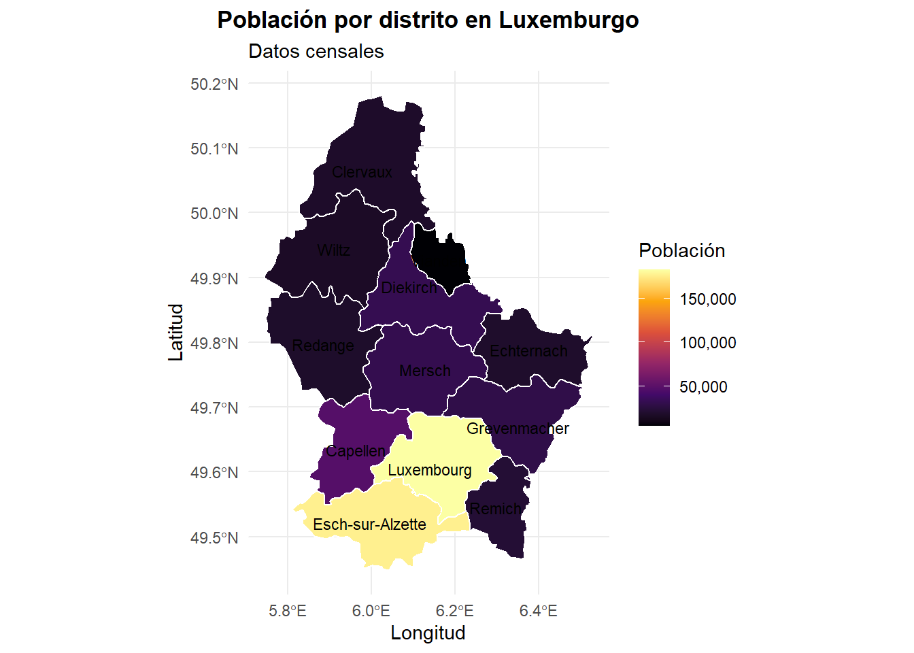
###Ejercicio 2: Mapa raster personalizado Crea un raster simple (sin límites ni otros elementos de mapas) que represente un gradiente de este a oeste (valores que aumentan de izquierda a derecha) y de norte a sur (valores que aumentan de arriba a abajo). Combínalos para crear un patrón de sombreado y visualízalo con ggplot2.
# Tu código aquí para el ejercicio 2:
# 1. Crea una secuencia de coordenadas x e y
# 2. Calcula valores basados en las coordenadas (p.ej., x * y)
# 3. Crea un data.frame con x, y y valor
# 4. Visualiza con geom_raster()# Solución del ejercicio 2:
# Crear coordenadas
x_coords <- seq(0, 10, length.out = 100)
y_coords <- seq(0, 10, length.out = 100)
# Crear matriz de valores (producto de coordenadas)
valores <- outer(x_coords, y_coords, function(x, y) x * y)
# Crear data.frame
raster_df <- expand.grid(x = x_coords, y = y_coords)
raster_df$valor <- as.vector(valores)
# Visualizar
ggplot(raster_df, aes(x = x, y = y, fill = valor)) +
geom_raster() +
scale_fill_viridis_c(option = "turbo", name = "Valor") +
labs(title = "Raster artificial: gradiente X*Y",
x = "Coordenada X",
y = "Coordenada Y") +
theme_minimal() +
coord_equal()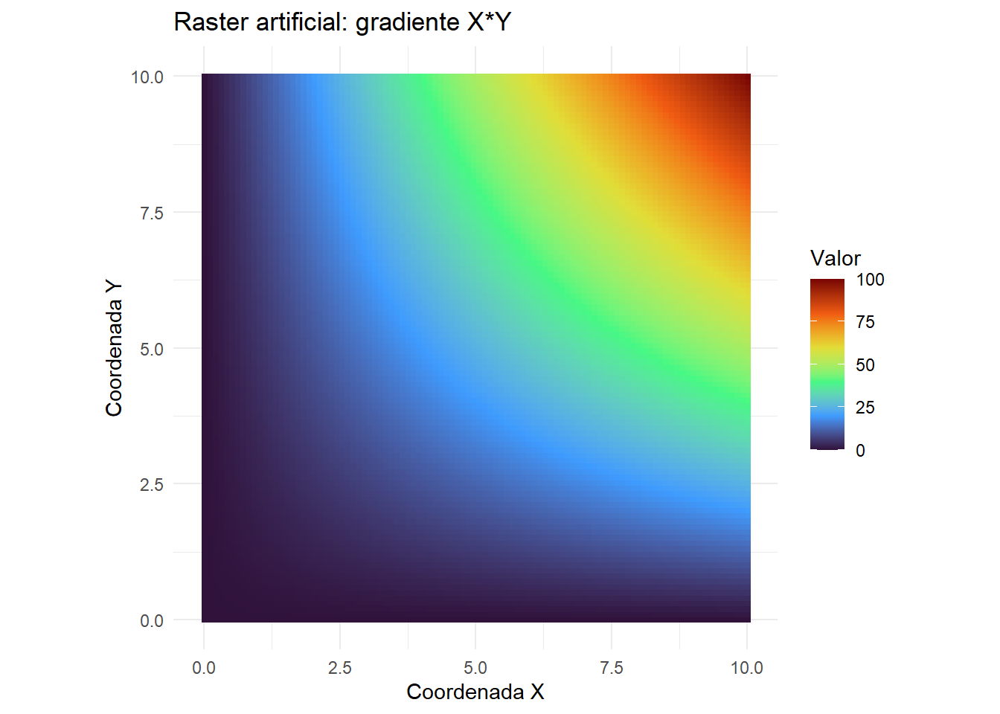
Ejercicio 3: Mapa de localizaciones puntuales Crea un mapa que muestre puntos de interés en Luxemburgo. Puedes generar coordenadas aleatorias dentro de la extensión del país y visualizarlas sobre el mapa vectorial.
7.6 Consejos y mejores prácticas
Elección de colores:
Para datos secuenciales (como elevación o temperatura), usa paletas secuenciales (viridis, magma, plasma).
Para datos categóricos (como tipos de suelo o regiones), usa paletas cualitativas (Set3, Accent, Dark2).
Sistemas de coordenadas:
Siempre verifica el CRS (Sistema de Referencia de Coordenadas) de tus datos.
Para datos vectoriales: st_crs(objeto_sf)
Para datos raster: crs(objeto_raster)
Rendimiento:
Para mapas muy detallados con muchos polígonos, considera simplificar la geometría.
Para rásteres muy grandes, considera reducir la resolución o usar submuestreo.
Leyendas:
Asegúrate de que las leyendas sean claras e informativas.
Incluye unidades cuando sea apropiado.
Considera la posición de la leyenda (derecha, izquierda, abajo) según el espacio disponible.
Reproducibilidad:
Siempre establece una semilla (set.seed()) cuando generes datos aleatorios.
Documenta las fuentes de tus datos espaciales.
Especifica las versiones de los paquetes utilizados.